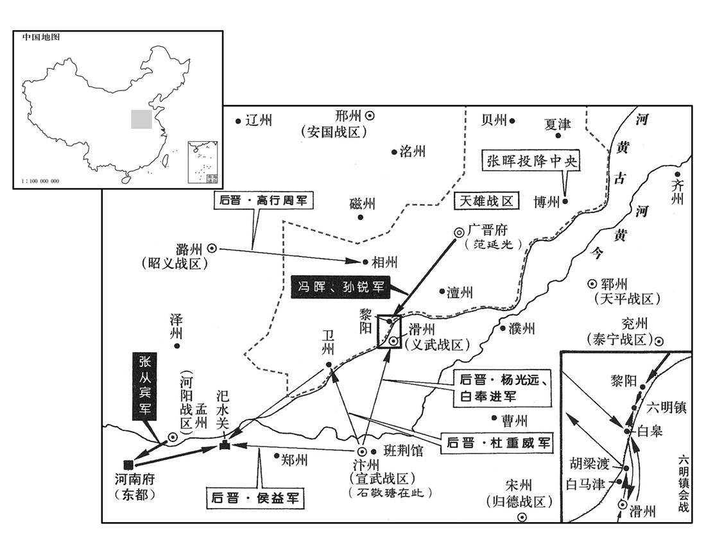
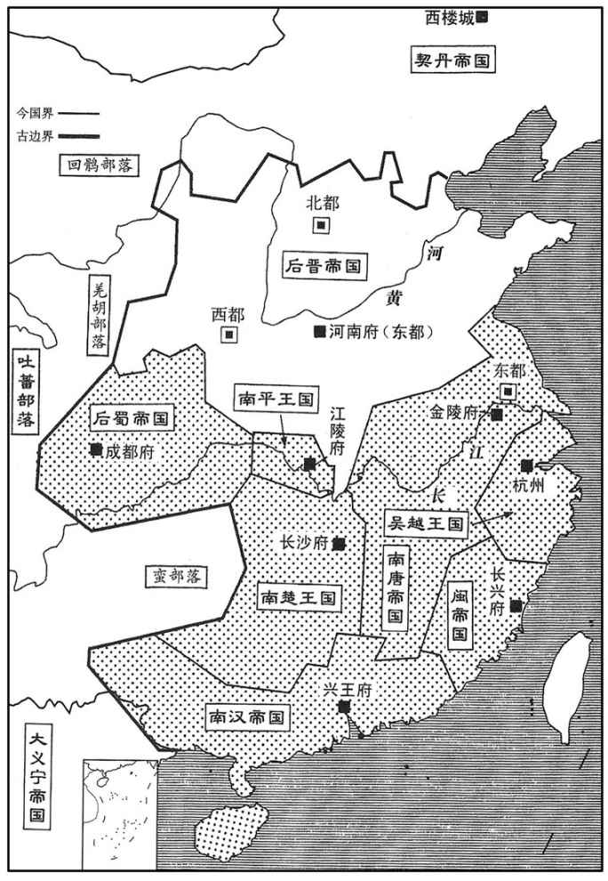
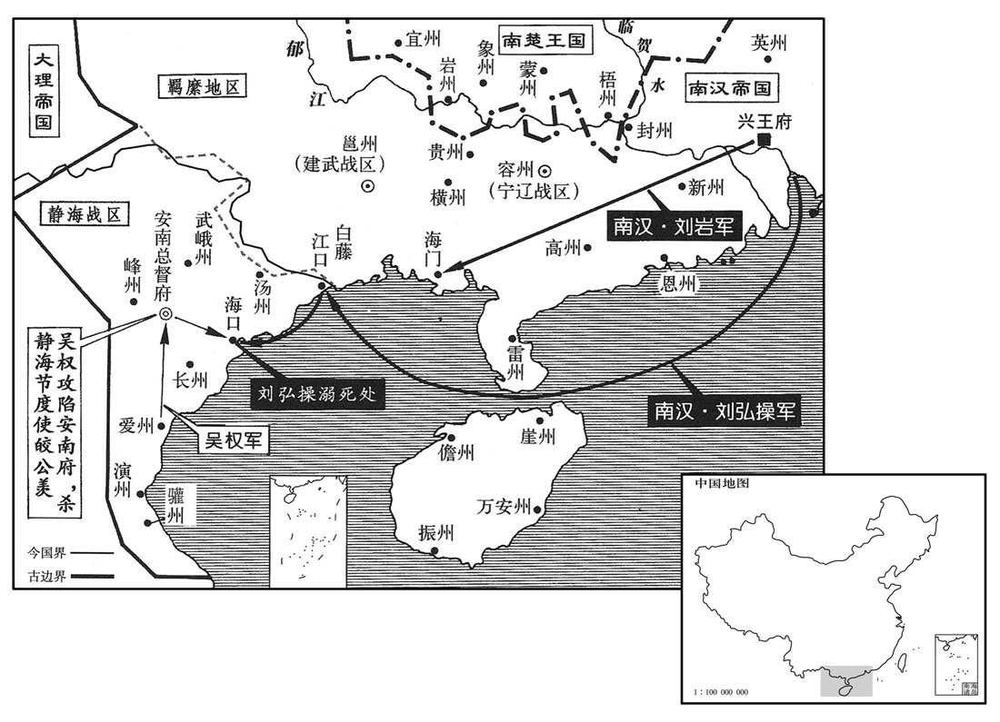
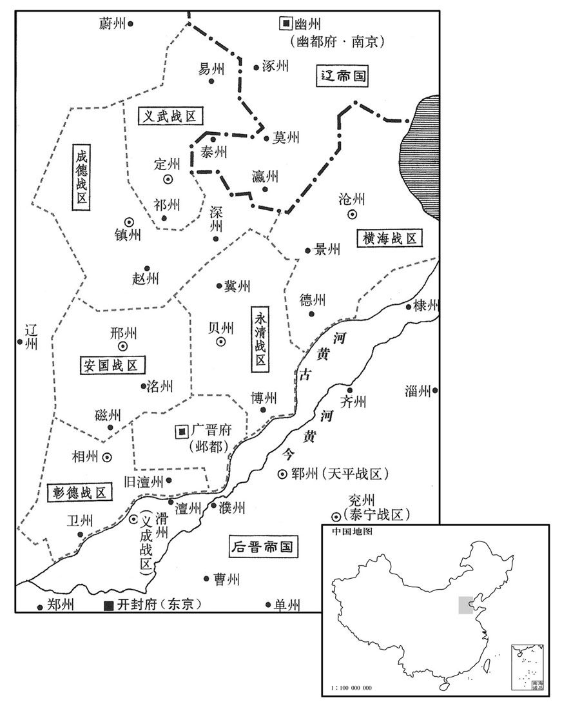

卷次与人物目录 / 卷281
资治通鉴 · 卷第二百八十一【后晋纪二】
公元937年至公元938年 · 原文、白话与胡三省注
本页按胡注本编排保存全卷内容。白话采用本站所据译本，未可靠对应的内容另列说明；事件标题用于定位，并非原书文字。
本卷共118段原文，118段有译文对应，0段缺译或待核对。
卷第二百八十一【后晋纪二】起强圉作噩（丁酉），尽着雍淹茂（戊戌），凡二年。
卷首原文与注释
高祖圣文章武明德孝皇帝上之下
公元937年 · 后晋高祖圣文章武明德孝皇帝天福二年
天福二年〔（丁酉、九三七）〕
本年事件索引（现代整理）
- 后晋发生日食
- 后晋任安重荣为成德节度使并令秘琼镇齐州
- 契丹定幽州为南京
- 李崧吕琦获后晋任用
- 范延光因谋反疑惧杀死秘琼并归罪他人
- 后晋任李崧为相桑维翰兼枢密使并筹划安抚藩镇
- 吴太子杨琏迎娶徐知诰之女
- 徐知诰在金陵营建太庙社稷并设置百官军制
- 吴主任卢文进为宣武节度使
- 吴主遣杨璪册封徐知诰为齐王
- 吴越王钱元瓘废黜弟弟钱元簔
- 契丹北返途中围攻云州吴峦闭城拒命
- 契丹征讨叛奚并扣留翟璋
- 张砺逃离契丹被擒后获契丹主宽待
- 钱元瓘诱杀弟钱元軈及钱元簔
- 后晋将李从珂遗骨以王礼葬于徽陵南
- 后晋遣使赴蜀通报即位并修好
- 范延光聚兵谋反后晋决定东迁汴州
- 吴徐知诰立徐景通为太子并改名李昪
- 后晋高祖石敬瑭自洛阳东巡汴州
- 南汉主刘龚病愈后大赦
- 交州将领皎公羡杀杨廷艺自立
- 石敬瑭抵汴州并大赦
- 吴越王钱元瓘恢复建国制度并立弘僔为世子
- 后晋加杨光远兼侍中
- 闽主营建紫微宫并派人巡察诸州
- 吴徐诰遣使携美女珍宝赴契丹谋求结盟
- 后晋将汴州牙城暂名大宁宫
- 后晋进封范延光为临清郡王以安抚魏州
- 后晋追尊四代祖先为帝后并准许收葬罪人遗骨
- 吴徐景迁卒
- 孙锐与冯晖劝范延光起兵反晋
- 后晋遣兵围讨魏州范延光拒命
- 后晋任和凝为端明殿学士
- 契丹攻云州半年不克应吴峦求援撤围
- 后晋任杨光远为魏府四面都部署
- 郭威向刘知远辞别并评价杨光远不足以成大事
- 张从宾与范延光合谋反叛并杀害皇子李重信李重乂
- 闽主营建白龙寺并以贿赂多少决定官员任命
- 张从宾攻打汜水末帝经桑维翰劝阻未逃往晋阳
- 范延光串联失意官员起兵谋反
- 符彦饶杀白奉进后滑州军兵变并擒送符彦饶赴洛阳
- 杨光远拒绝部下拥立并以严法约束军士
- 后晋任杨光远为魏府招讨使并任马万为义成节度使
- 杨光远于六明镇半渡击败冯晖孙锐
- 杜重威侯益攻克汜水张从宾渡河溺死
- 博州刺史张晖举城归降后晋
- 王晖杀周緕据安州并企图伺机叛逃
- 范延光因事不济杀孙锐后上表待罪
- 吴臣王令谋赴金陵劝徐知诰受禅
- 安从进遣兵截击王晖王晖被部将胡进杀死
- 吴历阳公杨蒙杀守卫王宏后被押送江都并杀害
- 后晋赦免张从宾符彦饶王晖余党
- 后晋遣使赎回被契丹掳掠的士民
- 吴臣王令谋病重仍劝徐知诰受禅后卒
- 后晋任李金全为安远节度使
- 后晋命安崇阮与王故妃郭氏安葬娄继英
- 吴主遣杨璘奉玺绶禅让徐知诰在金陵称帝建南唐
- 南唐宴群臣李德诚揭出宋齐丘反对劝进
- 南唐主更改东都宫殿名并重置吴宗室爵位
- 南唐任张延翰张居咏李建勋为同平章事
- 南唐加宋齐丘大司徒宋齐丘不满未获政权
- 南唐立宋氏为皇后并任徐景通为吴王副元帅
- 南唐吴王徐景通改名徐璟
- 南唐封杨琏之妃为永兴公主
- 南唐立徐景遂为吉王并令其镇守东都
- 后晋进封钱元瓘为吴越国王及天下兵马副元帅
- 李金全亲信胡汉筠毒杀贾仁沼并灭庞令图全族
- 蜀国大赦并改明年年号为明德
- 后晋任马希范为江南诸道都统
春，正月，乙卯，日有食之。〔考异曰：实录：「正月甲寅朔，乙卯日食。」十国纪纪：「蜀乙卯朔日食。」盖晋人避三朝日食而改历耳。〕
春季，正月，乙卯（初二），出现日食。
诏以前北面招收指挥使安重荣〔此在晋阳围城中所授安重荣军职言也，故曰前。重，直龙翻。〕为成德节度使，〔时秘琼自为成德留后，以安重荣代之。〕以秘琼为齐州防御使。〔秘，姓也，汉、魏之间有南安秘宜。〕遣引进使王景崇谕琼以利害。重荣与契丹将赵思温偕如镇州，琼不敢拒命。〔畏契丹也。〕丙辰，重荣奏已视事。〔为安重荣以成德反张本。〕景崇，邢州人也。
后晋高祖石敬瑭下诏，任用前北面招收指挥使安重荣为成德节度使，任用秘琼为齐州防御使。派遣引进使王景崇去给秘琼讲明利害。安重荣与契丹将领赵思温相偕来到镇州，秘琼不敢拒绝接受命令。丙辰（初三），安重荣上奏称已经视事。王景崇是邢州人。
契丹以幽州为南京。〔欧史曰：以幽州为燕京。参考赵思温为留守事，则南京为是。〕
契丹把幽州做为南京。
李崧、吕琦逃匿于伊阙民间。帝以始镇河东，崧有力焉，德之；〔李崧议以帝镇河东，事见二百七十八卷唐明宗长兴三年。〕亦不责琦。〔李崧、吕琦建和契丹以制河东之议，见上卷上年三月。〕乙丑，以琦为秘书监；丙寅，以崧为兵部侍郎、判户部。
李崧、吕琦逃匿在伊阙民间。后晋高祖认为开始镇守河东时，李崧推举有功，心里感激他；也不责备吕琦。乙丑（十二日），任用吕琦为秘书监；丙寅（十三日），任用李崧为兵部侍郎、判理户部。
初，天雄节度使兼中书令范延光微时，有术士张生语之云：〔语，牛倨翻。〕「必为将相。」延光既贵，信重之。延光尝梦蛇自脐入腹，以问张生，张生曰：「蛇者龙也，帝王之兆。」延光由是有非望之志。唐潞王素与延光善，及赵德钧败，延光自辽州引兵还魏州，〔赵德钧败见上卷上年闰十一月。范延光屯辽州见上年十月；其还魏州亦必在闰十一月。〕虽奉表请降，〔降，户江翻。〕内不自安，以书潜结秘琼，欲与之为乱；琼受其书不报，延光恨之。琼将之齐，过魏境，延光欲灭口，且利其货，遣兵邀之于夏津，杀之。〔为范延光以魏反，复以货为杨光远所杀张本。夏津，古鄃县，唐天宝元年更名夏津，属贝州；宋以夏津属北京，在京东北二百五十里。夏，户雅翻。〕丁卯，延光奏称夏津捕盗兵误杀琼；帝不问。
从前，天雄节度使兼中书令范延光微贱时，有个术士张生对他说：“您将来必定做将相。”范延光贵显后，很信任器重他。范延光曾经梦见蛇从肚脐钻入腹中，便把这件事询问张生，张生说：“蛇就是龙，是当帝王的兆头。”范延光从此有了非份之想。后唐潞王李从珂素来与范延光友善，等到赵德钧败亡后，范延光从辽州领兵返归魏州，虽然他向晋高祖上表请降，内心很不自安，他写信暗中勾结秘琼，想同他一起作乱；秘琼接信后不作回答，范延光很怨恨他。秘琼将要去齐州就任，经过魏州境内，范延光想灭口，并且贪爱他的财货，便派兵在夏津阻挡他，把他杀了。丁卯（十四日），范延光秦称夏津捕捉强盗，士兵误杀秘琼，后晋高祖不作究问。
戊寅，以李崧为中书侍郎、同平章事，充枢密使，桑维翰兼枢密使。时晋新得天下，藩镇多未服从；或虽服从，反仄不安。兵火之余，府库殚竭，民间困穷，而契丹征求无厌。〔厌，于盐翻。〕维翰劝帝推诚弃怨以抚藩镇，卑辞厚礼以奉契丹，训卒缮兵以修武备，务农桑以实仓廪，通商贾以丰货赐。数年之间，中国稍安。〔史言桑维翰有益于石晋草创之初者如此。贾，音古。〕
戊寅（二十五日），高祖任用李崧为中书侍郎、同平章事，充枢密使，高祖任用桑维翰兼枢密使。当时，后晋新得天下，藩镇大多还没有服从；或者虽然服从，但是还反复不安定。战争焚掠之余，官家府库中的金帛财物已经支用净尽，民间生活困难贫穷，而契丹又征调索求没完没了。桑维翰劝说晋高祖要诚心诚意、放弃前怨，来安抚各地藩镇；用谦卑的言词和丰厚的献礼，来结好于契丹；训练士卒、修缮兵器，来完善武备力量；勤务农桑生产，来充实仓储；通畅商贾贸易，来交流丰富财货。几年之间，中国就会稍见安定。
吴太子琏纳齐王知诰女为妃。〔琏，力展翻。〕
吴国太子杨琏娶了齐王徐知诰的女儿做妃子。
知诰始建太庙、社稷，改金陵为江宁府，〔先是，吴以升州为金陵府，今复更名。〕牙城曰宫城，厅堂曰殿；以左‧右司马宋齐丘、徐玠为左‧右丞相，马步判官周宗、内枢判官黟人周延玉为内枢使。〔黟，汉县，唐属歙州。九域志：在州西一百五十三里。黟，颜师古音伊，刘昫音硻。〕自余百官皆如吴朝之制。〔朝，直遥翻。〕置骑兵八军，步兵九军。
徐知诰开始修建太庙、社稷祭坛、更改金陵为江宁府，牙城称作宫城，府中的厅堂称为殿；委任左、右司马宋齐丘和徐为左、右丞相，马步判官周宗、内枢判官黟县人周廷玉为内枢使。其余百官，都和吴国的制度一样。置建骑兵八个军，步兵九个军。
二月，吴主以卢文进为宣武节度使，〔宣武军汴州，时属晋，吴以卢文进遥领耳。〕兼侍中。
二月，吴主杨溥任用卢文进为宣武节度使，兼任侍中。
戊子，吴主使宜阳王璪如西都，〔吴以金陵为西都见上卷上年。璪，子皓翻。〕册命齐王；王受册，赦境内。册王妃曰王后。
戊子（初五），吴主让宜阳王杨去西都金陵，册命齐王；齐王徐知诰接受册命，在辖境以内实行大赦，册立王妃称作王后。
吴越王元瓘之弟顺化节度使、同平章事元簔获罪于元瓘，废为庶人。〔钱元簔得罪之始见二百七十八卷唐明宗长兴四年。簔，音向。〕
吴越王钱元的弟弟顺化节度使、同平章事钱元得罪了钱元，被废黜为庶民。
契丹主自上党过云州，大同节度使沙彦珣出迎，契丹主留之，不使还镇。节度判官吴峦在城中，谓其众曰：「吾属礼义之俗，安可臣于夷狄乎！」众推峦领州事，闭城不受契丹之命，契丹攻之，不克。应州马军都指挥使金城郭崇威亦取臣契丹，挺身南归。〔汉之金城，唐兰州五泉县是也。唐之金城，汉为枝阳县地，凉置广武郡，隋废郡为广武县，唐干元二年更曰金城，属兰州。按此非兰州之金城，乃应州之金城县也。唐明宗生于代北之金凤城，及即位，以其地置金城县，仍置应州，治焉。郭崇威盖以土人为本镇都将。又匈奴须知云：应州东至幽州八百五十里；金城县东北至朔州八百里。如须知所云，应州与金城县似为两处，南北风马牛不相及，未能审其是，又当从涉其地者问之。挺，拔也。〕
契丹主耶律德光从上党北上经过云州时，大同节度使沙彦出城迎接，契丹主把他留下，不让回镇所。节度判官吴峦在城中，对他的下属将士说：“我们属于有礼义之俗的国家，怎么可以做夷狄的臣民啊！”众人推举吴峦领导全州的事务，关上城门不接受契丹的命令，契丹兵攻城，攻不下来。应州马军都指挥使金城人郭崇威也耻于向契丹称臣，挺身南归。
契丹主过新州，命威塞节度使翟璋敛犒军钱十万缗。初，契丹主阿保机强盛，室韦、奚、霁皆役属焉。〔翟，直格翻，又徒历翻，姓也。犒，苦到翻。霁，似入翻。〕奚王去诸苦契丹贪虐，帅其众西徙妫州，〔帅，读曰率。〕依刘仁恭父子，号西奚。〔东奚居琵琶川；西奚徙妫州，依北山而居。〕去诸卒，子扫剌立。〔剌，来达翻；下拽剌同。〕唐庄宗灭刘守光，赐扫剌姓李名绍威。绍威娶契丹逐不鲁之姊。逐不鲁获罪于契丹，奔绍威，绍威纳之；契丹怒，攻之，不克。绍威卒，子拽剌立。〔拽，户结翻。〕及契丹主德光自上党北还，〔还，从宣翻，又如字。〕拽剌迎降，〔降，户江翻。〕时逐不鲁亦卒，契丹主曰：「汝诚无罪，扫剌、逐不鲁负我。」皆命发其骨，硙而扬之。〔硙，五对翻，也，今人谓之磨。扬，余章翻。〕诸奚畏契丹之虐，多逃叛。契丹主劳翟璋曰：「当为汝除代，令汝南归。」〔劳，力到翻。为，于伪翻。〕己亥，璋表乞征诣阙。既而契丹遣璋将兵讨叛奚、攻云州，有功，留不遣璋，璋郁郁而卒。
契丹主经过新州，命令威塞节度使翟璋收集犒劳军队的钱十万缗。以前，契丹主耶律德光的父亲契丹太祖耶律阿保机强盛，室韦、奚、都成为他的属地而为其役使。奚王去诸苦于契丹的贪求和虐待。带领他的属众向西迁徙到妫州，依附于刘仁恭父子，号称西奚。去诸死后，他的儿子扫剌继立。后唐庄宗讨灭刘守光时，赐给扫剌姓李，名绍威。李绍威娶了契丹逐不鲁的姐姐。逐不鲁得罪了契丹，投奔李绍威，李绍威接纳了他；契丹发怒，攻打他，没有攻下来。李绍威死后，子拽剌继立。等到契丹主耶律德光从上党北归时，拽剌迎接并投降于他，当时逐不鲁也死了，契丹主耶律德光说：“你实在是没有罪过的，扫剌、逐不鲁有负于我。”便令人把二人的尸骨挖掘出来，磨碎后加以散扬。各处奚人畏惧契丹的暴虐，很多都叛离逃走。契丹主慰劳翟璋说：“我一定找人替代你的职务，让你回到南朝。”己亥（十六日），翟璋上表后晋朝廷，请求召他回朝。没有多久，契丹派遣翟璋领兵去讨伐叛变的奚人，进攻云州，有功劳，便把他留下，不让他回去，最后翟璋郁郁而死。
张砺自契丹逃归，为追骑所获，契丹主责之曰：「何故舍我去﹖」对曰：「臣华人，饮食衣服皆不与此同，生不如死，愿早就戮。」契丹主顾通事高彦英曰：「吾常戒汝善遇此人，〔契丹置通事以主中国人，以知华俗、通华言者为之。宋白曰：契丹主腹心能华言者目曰通事，谓其洞达庶务。〕何务使之失所而亡去﹖若失之，安可复得邪！」〔复，扶又翻。〕笞彦英而谢砺。砺事契丹主甚忠直，遇事辄言，无所隐避，契丹主甚重之。〔史言契丹主知重儒者。〕
翰林学士张砺从契丹逃归南方，被追赶的契丹骑兵抓获，契丹主责备他说：“你为什么离我而去？”张砺回答说：“我是中原人，饮食、衣服都同此地不一样，活着还不如死了，我愿意您早日把我杀了。”契丹主对着翻译高彦英说：“我常常告诫你要优厚地对待这个人，你为什么让他流离失所而逃走？如果失去他，还能到哪里去获得这样的人！”便笞打高彦英而向张砺道歉。张砺侍奉契丹主很是忠心和直率，遇到问题往往进言，没有什么隐藏和躲避的，契丹主很器重他。
初，吴越王镠少子元軈〔少，诗照翻。軈，思聿翻。考异曰：晋高祖实录、十国纪年作「元球」，今从吴越备史、九国志。〕数有军功，〔数，所角翻。〕镠赐之兵仗。及吴越王元瓘立，元軈为土客马步军都指挥使〔【章：十二行本「使」下有「静江节度使」五字；乙十一行本同；孔本同；张校同。】〕兼中书令，恃恩骄横，〔横，户孟翻。〕增置兵仗至数千，国人多附之。元瓘忌之，使人讽元軈请输兵仗，出判温州，元軈不从。铜官庙吏告元軈遣亲信祷神，求主吴越江山；又为蜡丸从水窦出入，与兄元簔谋议。〔蜡丸者，蜡弹书也，作书以蜡丸其外。〕三月，戊午，元瓘遣使者召元軈宴宫中，既至，左右称元軈有刃坠于怀袖，即格杀之；并杀元簔。〔元簔被幽见二百七十八卷唐明宗长兴四年。〕元瓘欲按诸将吏与元簔、元軈交通者，其子仁俊谏曰：「昔光武克王郎，曹公破袁绍，皆焚其书疏以安反侧，〔光武事见三十九卷汉更始二年。曹公事见六十四卷献帝建安五年。〕今宜效之。」元瓘从之。
以前，吴越王钱的小儿子钱元，多次建立军功，钱赐给他护从用的兵仗。等到吴越王钱元继立后，钱元被任命为土客马步军都指挥使兼中书令。他依恃恩宠而骄傲蛮横，增设兵仗达数千人，国中的人常常依附他。钱元猜忌他，让人去劝钱元自己请求捐献兵仗，出朝去判理温州，钱元不干。铜官庙的司管官员告发钱元派亲信去向神祈祷，求神让他做吴越江山的君主；又告发他制作蜡丸从水洞流进流出，与他哥哥钱元密谋策划。三月，戊午（初五），钱元派使者召唤钱元到宫中赴宴，到达后，宫中左右的人声称钱元身上有刀坠挂在怀袖里边，就把他捉拿杀了；同时杀了钱元。钱元还要查究将吏中与钱元、钱元有交往沟通的人。他的儿子钱仁俊劝谏他说：“昔日东汉光武帝打败王莽，三国时曹操破了袁绍，都把他们的往来书信烧了，用以平息出现反叛和倾覆，现在，我们也应该效法他们。”钱元听从了这个意见。
或得唐潞王膂及髀骨献之，庚申，诏以王礼葬于徽陵南。〔唐闵帝之葬从徽陵，封纔数尺，见者悲之。潞王葬于徽陵南，见者莫之悲也，岂非人心之公是非邪！〕
有人得到后唐潞王李从珂自焚后的脊骨和髋骨，拿来进献，庚申（初七），后晋高祖下诏，用王礼葬于徽陵之南。
帝遣使诣蜀告即位，且叙姻好；〔蜀主孟知祥与帝皆后唐之主伲，蜀主娶晋王克用侄女，帝娶明宗女，与蜀后主兄弟行也，故叙姻好。好，呼到翻。〕蜀主复书，用敌国礼。
后晋高祖遣派使者到蜀国去通告自己即位的事，并且叙述姻亲之好；蜀后主孟昶用对待平等国家的礼节回了信。
范延光聚卒缮兵，悉召巡内刺史集魏州，〔天雄军巡内有贝、博、卫、澶，相五州刺史。〕将作乱。会帝谋徙都大梁，桑维翰曰：「大梁北控燕、赵，南通江、淮，水陆都会，资用富饶。今延光反形已露，大梁距魏不过十驿，〔唐制，三十里一驿。十驿，三百里。〕彼若有变，大军寻至，所谓疾雷不及掩耳也。」丙寅，下诏，托以洛阳漕运有阙，东巡汴州。
范延光聚集兵马、修理兵器，把他管辖下的刺史全部召集到魏州，将要作乱造反。适逢后晋高祖打算迁都到大梁，桑维翰说：“大梁北控燕、赵，南通江、淮，是水陆两路都会，物资和财用都很富饶。现在范延光的谋反迹象已经显露出来，大梁距离魏州不过十个驿站那么远，他那边如果发生变故，大军很快就可过来，真是像俗话所说的‘迅雷不及掩耳’一样啊！”丙寅（十三日），下诏，托言洛阳漕运不足，东巡汴州。
吴徐知诰立子景通为王太子；固辞不受。追尊考忠武王温曰太祖武王，妣明德太妃李氏曰王太：后。壬申，更名诰。〔更，工衡翻。徐知诰去名上「知」字，单名「诰」，示不与徐氏兄弟同也。〕
吴国齐王徐知诰册立他的儿子徐景通为王太子；徐景通坚决辞谢不接受。徐知诰又追尊他的父亲忠武王徐温为太祖武王，他的母亲明德太妃李氏为王太后。壬申（十九日），更改自己的名字为诰。
庚辰，帝发洛阳，留前朔方节度使张从宾为东都巡检使。
庚辰（二十七日），后晋高祖从洛阳出发东巡，留下前朔方节度使张
从宾为东都巡检使。
汉主以疾愈，大赦。
南汉主刘龚因为生病痊愈，实行大赦。
交州将皎公羡杀安南节度使杨廷艺而代之。〔长兴二年杨廷艺得交州，见唐明宗纪。皎，姓也。〕
交州将领皎公羡杀安南节度使杨廷艺并取而代之。
夏，四月，丙戌，帝至汴州；丁亥，大赦。
夏季，四月，丙戌（初四），后晋高祖到达汴州；丁亥（初五），实行大赦。
吴越王元瓘复建国，如同光故事。〔元瓘之初立，罢建国，事见二百七十八卷唐明宗长兴三年。〕丙申，赦境内，立其子弘僔为世子。〔僔，子损翻。〕以曹仲达、沈崧、皮光业为丞相，镇海节度判官林鼎掌教令。
吴越王钱元恢复建国，如同后唐庄宗同光时期一样。丙申（十四日），在辖境以内实行大赦，册立他的儿子钱弘为世子。任用曹仲达、沈崧、皮光业为丞相，镇海节度判官林鼎掌管教令。
丁酉，加宣武节度使杨光远兼侍中。
丁酉（十五日），后晋朝廷加封宣武节度使杨光远兼任侍中。
闽主作紫微宫，饰以水晶，土木之盛倍于宝皇宫。〔唐明宗长兴二年闽主璘作宝皇宫。〕又遣使散诣诸州，伺人隐慝。〔慝，吐得翻。〕
闽主王修建紫微宫，用水晶做装饰，土木工程的盛大，加倍于宝皇宫。又派出使者分散到所辖各州，暗中侦查人们所隐匿的事情。
五月，吴徐诰用宋齐丘策，欲结契丹以取中国，遣使以美女、珍玩泛海修好，〔好，呼到翻。〕契丹主亦遣使报之。
五月，吴国齐王徐诰采用宋齐丘的计谋，想要勾结契丹来取得对中原的统治，遣派使者用美女、珍玩宝货从海上送去以修好，契丹主耶律德光也遣派使者回报他。
丙辰，敕权署汴州牙城曰大宁宫。〔时御史台奏：「汴州在梁有京都之号，及唐庄宗废为宣武军，至明宗行幸时，掌事者修葺衙城，遂挂梁时宫殿门牌额，当时识者或窃非之。一昨车驾省方，暂居梁苑，衙城内斋合牌额一如明宗行幸之时，无都号而有殿名，恐非典据。窃寻秦、汉以来，銮舆所至，多立宫名。隋于扬州立江都宫，太原立汾阳宫，岐州立仁寿宫，唐于太原立晋阳宫，同州立长春宫，岐州立九成宫，宫中殿合，皆题署牌额，以准皇居。请依故事，于汴州衙城门权挂一宫门牌额，则其余斋合并可取便为名。」敕：「行阙宜以大宁宫为名。」〕
丙辰（初五），后晋高祖下敕令：暂时把汴州的牙城署名为大宁宫。
壬申，进范延光爵临清郡王，以安其意。
两版字句有差异，建议核对原文。
壬申（二十一日），后晋朝廷进爵范延光为临清郡王，用来安抚他的心意。
追尊四代考妣为帝后。〔按五代会要：高祖璟谥靖祖孝安皇帝，妣秦氏谥元皇后；曾祖郴谥肃祖孝简皇帝，妣安氏谥恭皇后；祖昱谥睿祖孝平皇帝，妣米氏谥献皇后；考绍雍谥献祖孝元皇帝，妣何氏谥懿皇后。若以前史谓皇考名臬捩鸡推之，则四世之名，意皆有司所撰者也。〕己卯，诏太社所藏唐室罪人首听亲旧收葬。初，武卫上将军娄继英尝事梁均王，为内诸司使，至是，请其首而葬之。〔唐藏梁均王首于太社见二百七十二卷庄宗同光元年。史为娄继英请而不克葬张本。〕
后晋高祖追尊四代父母为皇帝和皇后。己卯（二十八日），下诏，太庙所藏唐室罪人的首级听由其亲属故旧加以收葬。当初，武卫上将军娄继英曾经臣事后梁均王朱友，任内诸司使，到这时，请求收殓均王的首级以便埋葬。
六月，吴诸道副都统徐景迁卒。
六月，吴国诸道副都统徐景迁去世。
范延光素以军府之政委元随左都押牙孙锐，锐恃恩专横，〔横，户孟翻。〕符奏有不如意者，对延光手裂之。会延光病经旬，锐密召澶州刺史冯晖，与之合谋逼延光反；〔澶，时连翻。〕延光亦思张生之言，〔张生之言见上正月。〕遂从之。
范延光向来把军府的政事委任给元随左都押牙孙锐办理，孙锐依恃恩宠而独断专横，符文奏章有不如意的当着范延光的面便把它撕碎了。适逢范延光患病已十多天，孙锐暗中召唤澶州刺史冯晖，同他合谋逼迫范延光造反；范延光也思念术士张生的话，便依从了他们。
甲午，六宅使张言奉使魏州还，言延光反状；义成节度使符彦饶奏延光遣兵渡河，焚草市；〔时天下兵争，凡民居在城外，率居草屋以成市里，以其价廉功省，猝遇兵火不至甚伤财以害其生也。此草市在滑州城外。〕诏侍卫马军都指挥使、昭信节度使白奉进将千五百骑屯白马津以备之。〔白马津在滑州白马县。〕奉进，云州人也。丁酉，以东都巡检使张从宾为魏府西南面都部署。戊戌，遣侍卫都军使杨光远〔侍卫都军使，即侍卫诸军都指挥使。〕将步骑一万屯滑州。己亥，遣护圣都指挥使杜重威将兵屯卫州。〔五代会要曰：天福六年改成德两军为护圣左右军。据此，则此时已有护圣军矣。〕重威，朔州人也，尚帝妹乐平长公主。〔长，知两翻。〕范延光以冯晖为都部署，孙锐为兵马都监，将步骑二万循河西抵黎阳口。〔黎阳在魏州西南，故循河西上而后至。〕辛丑，杨光远奏引兵踰胡梁渡。〔此即史思明所济胡良渡也，在滑州北岸澶州界。薛史：天福六年，诏以胡梁渡月城为大通军，浮桥为大通桥。〕
甲午（十三日），六宅使张言奉晋高祖之命出使魏州回朝，奏言范延光造反的情况；义成节度使符彦饶奏报范延光派兵渡过黄河，焚烧了以草屋为居的滑州城外市里；下诏命令侍卫马军都指挥使、昭信节度使白奉进率领一千五百骑兵屯驻白马津，用来加强防备。白奉进是云州人。丁酉（十六日），任命东都巡检使张从宾为魏府西南面都部署。戊戌（十七日），遣派侍卫都军使杨光
远统领步兵、骑兵一万人屯驻滑州。己亥（十八日），遣派护圣都指挥使杜重威统兵屯驻卫州。杜重威是朔州人，娶的妻子是晋高祖的妹妹乐平长公主。范延光任用冯晖为都部署，孙锐为兵马都监，统领步兵、骑兵二万人，沿着黄河西岸到达黎阳口。辛丑（二十日），杨光远奏报：率兵过了胡梁渡。
以翰林学士、礼部侍郎和凝为端明殿学士。凝署其门不通宾客。前耀州团练推官襄邑张谊〔襄邑县属宋州。九域志：在大梁东南一百七十里。〕至书于凝，以为「切近之职为天子耳目，宜知四方利病，奈何拒绝宾客！虽安身为使，如负国何！」凝奇之，荐于桑维翰，未几，除左拾遗。〔几，居岂翻。〕谊上言：「北狄有援立之功，宜外敦信好，〔好，呼到翻。〕内谨边备，不可自逸，以启戎心。」帝深然之。
后晋高祖任用翰林学士、礼部侍郎和凝为端明殿学士。和凝在他家的大门上贴出通告，不迎接宾客。前耀州团练推官襄邑人张谊给和凝写信，认为“切近朝廷的职位是天子的耳目，应该知道四方的利和弊，怎么能拒绝宾客！虽然对自己不受干扰是方便了，但亏负了国家的付托可怎么好！”和凝很惊奇，把他推荐给桑维翰，没多久，被任用为左拾遗。张谊上书说：“北狄契丹有援助立朝的功劳，应该表面上与他敦信修好，内部要认真加强边境上的戒备，不能自己放松警惕，因而开启他的兴兵侵犯之心。”后晋高祖感到讲得很正确。
契丹攻云州，半岁不能下。吴峦遣使间道奉表求救，帝为之致书契丹主请之，〔间，胡苋翻。陉北诸州皆归契丹，故间道南来。为，于伪翻。〕契丹主乃命翟璋解围去。帝召峦归，以为武宁节度副使。
契丹进攻云州，半年也攻不下来。守将吴峦派人从便道紧急奉表朝廷求救，后晋高祖为他给契丹主写信提出请求，契丹主便下令翟璋解围而去。后晋高祖把吴峦召唤回来，任用他为武宁节度副使。
丁未，以侍卫使杨光远为魏府四面都部署，〔侍卫使即侍卫都军使，史从省文也。〕张从宾为副部署兼诸军都虞候，昭义节度使高行周将本军屯相州，为魏府西面都部署。〔相州在魏州之西，使高行周自潞州将兵屯相州，以临范延光。〕
丁未（二十六日），后晋高祖任命侍卫使杨光远为魏府四面都部署，张从宾为副部署兼诸军都虞侯，昭义节度使高行周统领本军屯驻相州，为魏府西面都部署。
军士郭威旧隶刘知远，当从杨光远北征，〔自大梁而征魏州为北征。薛史周纪：郭威初事李继韬；继韬诛，配从马直。晋祖领副侍卫；召置麾下，因而得事汉祖。〕白知远乞留。人问其故，威曰：「杨公有奸许之才，无英雄之气，得我何用﹖能用我者其刘公乎！」〔为郭威为刘知远佐命张本。〕
军士郭威原来隶属于刘知远，应当随从杨光远北征，他向刘知远说明要求留下。人们问他为什么，郭威说：“杨公有奸诈之才，无英雄之气，得到我有什么用处？能用我的大概就是刘公啊！”
诏张从宾发河南兵数千人击范延光。〔河南兵，河南府兵也。张从宾时为洛阳巡检使，故使发之。〕延光使人诱从宾，〔诱，音酉。〕从宾遂与之同反，杀皇子河阳节度使重信，〔重，直龙翻；下重乂同。〕使上将军张继祚知河阳留后。继祚，全义之子也。〔张全义自唐末尹河南，历唐、梁。〕从宾又引兵入洛阳，杀皇子权东都留守重乂，以东都副留守、都巡检使张延播知河南府事，从军。〔【章：十二行本「军」作「宾」；乙十一行本同；孔本同。张从宾虽以张延播知河南府事，不使之在府治事，而使之从军。〕取内库钱帛以赏部兵；留守判官李遐不与，兵众杀之。从宾引兵扼汜水关，〔汜水关以县名关，即虎牢关也。详见辩误。〕将逼汴州。诏奉国都指挥使侯益帅禁兵五千会杜重威讨张从宾；〔帅，读曰率。〕又诏宣徽使刘处让自黎阳分兵讨之。时羽檄纵横，从官在大梁者无不恟惧，〔羽檄纵横，言军书纷委也。从官家属皆留东都，而从驾在汴，根本已拔，故恟惧也。纵，子容翻。从，才用翻。恟，许拱翻。〕独桑维翰从容指昼军事，〔从，千容翻。〕神色自若，接对宾客，不改常度，众心差安。〔史言桑维翰能以整暇镇物。〕
后晋高祖下诏，命令张从宾派数千河南兵出击范延光。范延光让人去诱劝张从宾，张从宾便同范延光一起造反，杀了任河阳节度使的皇子石重信，让上将军张继祚主持河阳留后的事务，张继祚是张全义的儿子。张从宾又率领兵马进入洛阳，杀了暂时代理东都留守的皇子石重又，任用东都副留守、都巡检使张延播主持河南府事务，跟随军队行动。又调取内库的钱帛用来犒赏部兵；留守判官李遐不给，兵众把他杀了。张从宾带兵扼守汜水关，将要逼近汴州。后晋高祖下诏奉国都指挥使侯益率领五千禁兵会合杜重威去征讨张从宾；又诏宣徽使刘处让从黎阳分兵讨伐他。当时，军书往来纷繁，随从晋高祖在大梁的官员没有不烦扰惊恐的，只有桑维翰从容指挥军事，神色自若，接待应对宾客不改正常规范，众人见了心里略觉平静。
槀方士言于闽主，云有白龙夜见螺峰；〔见，贤遍翻。螺，卢戈翻。〕闽主作白龙寺。时百役繁兴，用度不足，闽主谓吏部侍郎、判三司候官蔡守蒙曰：〔后汉置东候官县，隋废入闽县，唐复置候官县，属福州。九域志：治州郭下。〕「闻有司除官皆受赂，有诸﹖」对曰：「浮议无足信也。」闽主曰：「朕知之久矣，今以委卿，择贤而授，不肖及罔冒者勿拒，〔罔冒，谓欺罔伪冒而求官者。以事理之所无而欺上，谓之罔；假他人之所有以饰伪，谓之冒。〕第令纳赂，籍而献之。」守蒙素廉，以为不可；闽主怒，守蒙惧而从之。自是除官但以货多少为差。〔为蔡守蒙以卖官受诛张本。〕闽主又以空名堂牒使医工陈究卖官于外，〔堂牒，即今人所谓省札。空名者，未书所授人名，既卖之得钱而后书填。空，若贡翻。〕专务聚敛，无有盈厌。〔敛，力赡翻。厌，于盐翻，又如字。〕又诏民有隐年者杖背，隐口者死，逃亡者族。果菜鸡豚，皆重征之。
有方士对闽主王言称，有条白龙夜间出现在螺峰，闽主便兴建了白龙寺。当时，各种劳役接连不断，资金用度很不充足，闽主对吏部侍郎、判三司侯官人蔡守蒙说：“听说有关部门委任官员都接受贿赂，有这样的事吗？”回答说：“流言蜚语不足为信。”闽主说：“朕知道此事已经很久了，现在把授官任职的事情，委托给你办理，要选择授给贤能的人，不称职和假冒顶替的人也不要拒绝，只是让他们纳贿，立籍造册而加以举荐。”蔡守蒙素称廉洁，认为不能这样办；闽主发怒，蔡守蒙害怕，便依从了。从此任用官员就凭纳钱多少来分差等。闽主又让医工陈究用空白不填名姓的委任牒文在外面卖官，专门从事搜刮民财，没有满足，贪得无厌。又下诏民间如有隐瞒年龄者用刑杖笞背，隐瞒人口者处死，逃亡者诛杀全族。果、菜、鸡、猪，都征收重税。
秋，七月，张从宾攻汜水，杀巡检使宋廷浩。帝戎服，严轻骑，将奔晋阳以避之。桑维翰叩头苦谏曰：「贼锋虽盛，势不能久，请少待之，不可轻动。」帝乃止。〔史言桑维翰有胆略，晋朝倚以为社稷之固。少，诗沼翻。〕
秋季，七月，张从宾攻打汜水，杀巡检使宋廷浩。后晋高祖穿着军装，整备轻骑，准备奔向晋阳避躲。桑维翰叩头苦苦谏阻说：“贼兵的锋芒虽然强盛，其势不能持久，请少等待一下，不可轻率动移。”后晋高祖这才留止未动。
范延光遣使以蜡丸招诱失职者，右武卫上将军娄继英、右卫大将军尹晖在大梁，温韬之子延浚、延沼、延衮居许州，皆应之。〔尹晖举军降潞王以得节镇，今居环卫，则为散官。温韬自唐明宗时受诛，其诸子废弃；而娄继英子妇温延沼女也，继英亦居冗散，故皆应延光。〕延光令延浚兄弟取许州，聚徒已及千人。继英、晖事泄，皆出走。壬子，敕以延光奸谋，诬污忠良，自今获延光谍人，赏获者，杀谍人，〔污，乌故翻。谍，达协翻。〕禁〔【章：十二行本「禁」作「焚」；张校同。】〕蜡书，勿以闻。〔不欲知所招诱主名，所以安反侧也。〕晖将奔吴，为人所杀。继英奔许州，依温氏。忠武节度使苌从简盛为之备，延浚等不得发，欲杀继英以自明，延沼止之，遂同奔张从宾。继英知其谋，劝从宾执三温，皆斩之。
范延光派遣使者用蜡丸密书招诱失职的人，右武卫上将军娄继英、右卫大将军尹晖在大梁，温韬的儿子温延浚、延沼、延兖居留在许州，都响应范延光而造反。范延光命令温延浚兄弟夺取许州，聚集徒众已达千人。娄继英、尹晖因为事情泄露，都逃走了。壬子（初二），晋高祖下敕书，认为范延光施用奸谋，诬陷玷污忠良，从今以后，抓获范延光的间谍，奖赏抓获的人，杀死间谍，焚烧蜡书，不必上报。尹晖将要投奔吴国，被人所杀。娄继英投奔许州，依附了温氏兄弟。忠武节度使苌从简以重兵防备他们，温延浚等不敢发作，想杀了娄继英以表白自己，温延沼阻止了他，便一同投奔了张从宾。娄继英知道了他们的阴谋，劝张从宾捉获温家三兄弟，都把他们杀了。
白奉进在滑州，〔是年六月遗白奉进屯白马。白马，滑州治所也。〕军士有夜掠者，捕之，获五人，其三隶奉进，其二隶符彦饶，奉进皆斩之；彦饶以其不先白己，甚怒。明日，奉进从数骑诣彦饶谢，彦饶曰：「军中各有部分，〔分，扶问翻。〕奈何取滑州军士并斩之，殊无客主之义乎！」〔符彦饶自以镇滑州为主，白奉进屯滑州为客。〕奉进曰：「军士犯法，何有彼我！仆已引咎谢公，而公怒不解，岂欲与延光同反邪！」拂衣而起，彦饶不留；帐下甲士大噪，擒奉进，杀之。从骑走出，大呼于外，诸军争擐甲操兵，諠噪不可禁止。〔从，才用翻。呼，火故翻。擐，音宦。操，七刀翻。〕奉国左厢都指挥使马万惶惑不知所为，帅步兵欲从乱，遇右厢都指挥使卢顺密帅部兵出营，〔帅，读曰率。〕厉声谓万曰：「符公擅杀白公，必与魏城通谋。此去行纔二百里，〔魏城，谓魏州城也。时范延光据魏州反。九域志：滑州南至大梁二百里。时帝在大梁。〕吾辈及军士家属皆在大梁，汝何不思报国，乃欲助乱，自求族灭乎！今日当共擒符公，送天子，立大功。军士从命者赏，违命者诛，勿复疑也！」〔复，扶又翻。〕万所部兵尚有呼跃者，〔呼，火故翻。〕顺密杀数人，众莫敢动。万不得已从之，与奉国都虞候方太等共攻牙城，执彦饶，令太部送大梁。甲寅，敕斩彦饶于班荆馆，〔左传，楚伍举与声子相善，伍举出奔，声子遇郑郊，班荆相与食而言。杜预注曰：班，布也；布荆坐地共议。以「班荆」名馆，取诸此也。此馆必在汴州郊外。〕其兄弟皆不问。〔按符存审诸子皆有材气，而彦卿又为一时名将。彦饶不能驭下，仓成乱，中弟初不通谋，罪不相及，古法也。〕
白奉进在滑州，有军士在夜间进行抢掠的，便捕捉他们，抓获了五个人，其中三个是白奉进的下属，两个是符彦饶的下属，白奉进把他们都杀了；符彦饶因为他没有先告诉自己，非常恼怒。第二天，白奉进带着几个随从骑兵来拜见符彦饶表示道歉。符彦饶说：“军中各有分属，为什么抓了滑州的军士一起杀了，连一点主人和客人的名份都不顾了！”白奉进说：“军士犯了法，怎能分你和我！我已经承担责任来向您道歉，而您还是发怒不止，这岂不成了想与范延光共同造反吗！”一甩袖子起身要走，符彦饶不挽留；帐下甲兵大为喧闹，捉住白奉进，把他杀了。白奉进的随从骑兵走出营帐，在外边大声呼喊，各方军队争着穿铠甲、手执武器，吵嚷之声不能禁止。奉国左厢都指挥使马万惶惑不知怎么办，率领步兵想跟着暴乱，正好遇上右厢都指挥使卢顺密率领本部人马出营，厉声对马万说：“符公擅自杀了白公，必定与魏城通谋。这里离天子行宫才二百里，我们这些人和军士的家属都在大梁，为什么不思报效国家，反而要帮助乱兵，自取灭族吗！现在我们应当共同捉拿符公，送交天子，立大功。军士服从命令的奖赏，违背命令的诛杀，不要再有什么疑虑！”马万所部士兵还有呼喊跳跃的，卢顺密杀了几人，众人就不敢乱动了。马万不得已跟从着他，与奉国都虞候方太等共同攻打牙城，抓住符彦饶，命令方太送往大梁。甲寅（初四），后晋高祖敕令在班荆馆斩杀了符彦饶，对于他的兄弟们都没有究问。

杨光远自白皋引兵趣滑州，〔趣，七喻翻。〕士卒闻滑州乱，欲推光远为主。光远曰：「天子岂汝辈贩弄之物！晋阳之降出于穷迫，〔谓在晋安寨杀张敬达而降也，事见上卷上年。降，户江翻。〕今若改图，真反贼也。」其下乃不敢言。时魏、孟、滑三镇继叛，〔魏，范延光。孟，张从宾。滑，符彦饶。〕人情大震，帝问计于刘知远，对：「帝者之兴自有天命。陛下昔在晋阳，粮不支五日，俄成大业。今天下已定，内有劲兵，北结强虏，〔强虏，谓契丹。〕鼠辈何能为乎！愿陛下抚将相以恩，臣请戢士卒以威；〔戢，则立翻。〕恩威兼着，京邑自安，本根深固，则枝叶不伤矣。」知远乃严设科禁，〔科，条也。〕宿卫诸军无敢犯者。有军士盗纸钱一揺，〔揺，逢玉翻，释云帊也。〕主者擒之，〔主者，纸□之主也。〕左右请释之，知远曰：「吾诛其情，不计其直。」竟杀之。〔唐法，治盗计赃定罪。刘知远严刑以威众，欲镇服其心以折乱萌，非可常行于平世也。〕由是众皆畏服。
杨光远从白皋领兵向滑州进军，士卒听说滑州动乱，想推举杨光远为君主。杨光远说：“天子岂是你们这等人所玩弄的物体！当年我在晋阳的投降是出于穷迫无奈，现在如果改变图谋，那就真是反贼了。”他的部下才不敢再说。当时，魏、孟、滑三镇相继叛变，人情大为震动，后晋高祖向刘知远询问怎么办，回答说：“帝王的兴起，自有天命。陛下当年在晋阳，粮食不足支持五天，转眼成就了大业。现在，天下已经平定，内有强盛的兵力，向北团结强大的胡虏，这些反叛的鼠辈能够干出什么来呢！愿陛下用恩德来安抚将相，我替您收敛士卒的威风，恩威兼施，京都自然会安定，树干和树根深固了，那么枝条和叶就不会受伤了。”刘知远便严格建立科罚禁犯的条令，宿卫京城的诸军没有敢违犯的。有个军士偷盗纸钱一幞，被其主人抓获，左右的人请求放了他，刘知远说：“我是按事情的情况来诛杀他的，不计较它的多少。”居然把他杀了，从此众军士都畏服。
乙卯，以杨光远为魏府行营都招讨使、兼知行府事，以昭义节度使高行周为河南尹、东京留守，〔「京」，当作「都」。〕以杜重威为昭义节度使、充侍卫马军都指挥使，以侯益为河阳节度使。〔侯益与杜重同讨张从宾，就命镇河阳。〕帝以滑州奏事皆马万为首，擢万为义成节度使。〔就以滑帅赏马万。晋、汉之间，有白再荣因乱而帅成德，马万之类也。〕丙辰，以卢顺密为果州团练使，〔果州时属蜀，命卢顺密遥领团练使。〕方献为赵州刺史；既而知皆顺密之功也，更以顺密为昭义留后。〔更，工衡翻。时杜重威领昭义节以讨张从宾，故以卢顺密为留后。〕
乙卯（初五），后晋高祖任命杨光远为魏府行营都招讨使、兼理行府事务，任用昭义节度使高行周为河南尹、东京留守，任用杜重威为昭义节度使、充当侍卫马军都指挥使，任用侯益为河阳节度使。后晋高祖因为滑州奏事都以马万为首，便提升马万为义成节度使。丙辰（初六），任用卢顺密为果州团练使，方太为赵州刺史；不久得知平定滑州都是卢顺密的功绩，便改任卢顺密为昭义留后。
冯晖、孙锐引兵至六明镇，〔六明镇在胡梁渡北。〕光远引之渡河，半渡而击之，晖、锐众大败，多溺死，斩首三千级，晖、锐走还魏。
冯晖、孙锐带领兵马到了六明镇，杨光远引诱他们渡河，渡了一半就袭击他们，尹晖、孙锐的兵众大败，很多人淹死水中，有三千人被斩杀，尹晖和孙锐逃回魏州。
杜重威、侯益引兵至汜水，遇张从宾众万余人，与战，俘斩殆尽，遂克汜水。从宾走，乘马渡河，溺死；〔溺，奴狄翻。〕获其党张延播、继祚、娄继英，送大梁，斩之，灭其族。〔符彦饶、张从宾等皆死，冯晖、孙锐又败，范延光之势孤且饂矣。〕史馆修撰李涛上言，张全义有再造洛邑之功，〔事见二百五十七卷唐僖宗光启三年。〕乞免其族，乃止诛继祚妻子。涛，回之族曾孙也。〔李回，唐武宗会昌中为相。〕
杜重威、侯益领兵到达汜水，遇到张从宾的兵众一万多人，同他们交战，几乎全部俘获斩尽，便攻克了汜水。张从宾逃走，乘马渡河，结果被淹死了；俘获他的党羽张延播、张继祚、娄继英，押送到大梁，把他们杀了，诛灭了他的家族。史馆修撰李涛上书奏言，张继祚的父亲张全义有再造洛阳的功劳，请求赦免他的族人，便只诛杀了张继祚的妻子。李涛是李回的族曾孙
杨光远奏知博州张晖举城降。〔博州，范延光巡属也。〕
杨光远奏报，主管博州事务的张晖带领全城投降。
安州威和指挥使王晖〔五代会要：唐有威和、拱宸内直军，晋天福六年改为兴顺左、右军。〕闻范延光作乱，杀安远节度使周緕，〔緕，古回翻。〕自领军府，欲俟延光胜则附之，败则渡江奔吴。帝遣右领军上将军李金全将千骑如安州巡检，许赦王晖为唐州刺史。
安州威和指挥使王晖听说范延光作乱，杀了安远节度使周，自己统领军府，打算等待范延光胜利就依附他，如果他败了就渡过长江投奔吴国。后晋高祖派遣右领军上将军李金全带领一千骑兵到安州去巡视检查，答应赦免王晖的罪，并任用他为唐州刺史。
范延光知事不济，归罪于孙锐而族之，〔孙锐劝范延光反见上六年。〕遣使奉表待罪。戊寅，杨光远以闻，帝不许。
范延光知道造反的事不能成功了，便归罪于孙锐，把他的全族人杀了，派出使者到后晋朝廷上表等待治罪。戊寅（二十八日），杨光远报告了朝廷，后晋高祖不准许。
吴同平章事王令谋如金陵劝徐诰受禅，诰让不受。
吴国同平章事王令谋到金陵劝徐诰接受吴主的禅让，继位当皇帝，徐诰辞让不接受。
山南东道节度使安从进恐王晖奔吴，遣行军司马张朏将兵会复州兵于要路邀之。〔朏，敷尾翻。邀其自复州而奔吴鄂州之路也。〕晖大掠安州，将奔吴，部将胡进杀之。八月，癸巳，以状闻。李金全至安州，将士之预于乱者数百人，金全说谕，悉遣诣阙；〔说，式芮翻。〕既而闻指挥使武彦和等数十人挟贿甚多，伏兵于野，执而斩之。彦和且死，呼曰：〔呼，火故翻。〕「王晖首恶，天子犹杀之；我辈胁从，何罪乎！」帝虽知金全之情，掩而不问。
山南东道节度使安从进担心王晖投奔吴国，派行军司马张领兵会合复州兵在冲要路上阻挡他。王晖在安州大肆抢掠后将要投奔吴国，部将胡进杀了他。八月，癸巳（十三日），把情况报告了朝廷。李金全到达安州，将士中有几百人参预动乱，李金全谕告他们，都让他们到京城去阙门诣见等待发落；接着，听说指挥使武彦和等数十人挟带行贿的财物很多，便在野外埋伏士兵把他们捉住杀了。武彦和临死前高声喊着说：“王晖是首恶，天子还把他赦免了，我们这些人都是胁从的，有什么罪！”后晋高祖虽然知道李金全的情况，把事情掩盖起来，不加究问。
吴历阳公蒙知吴将亡，甲子，〔【章：十二行本「子」作「午」；乙十一行本同；张校同。】〕杀守卫军使王宏；宏子勒兵攻蒙，蒙射杀之。〔蒙被囚见二百七十九卷唐潞王清泰元年。射，而亦翻。〕以德胜节度使周本吴之勋旧，引二骑诣庐州，欲依之。〔九域志：和州西至庐州五百三十里。〕本闻蒙至，将见之，其子弘祚固谏，本怒曰：「我家郎君来，何为不使我见！」弘祚合扉不听本出，〔门辟则两扉开，门阖则两扉合。〕使人执蒙于外，送江都。徐诰遣使称诏杀蒙于采石，〔迎而杀之，不使得至江都。〕追废为悖逆庶人，绝属籍。〔绝杨氏属籍。悖，蒲内翻，又蒲没翻。〕侍卫军使郭悰杀蒙妻子于和州，诰归罪于悰，贬池州。〔悰，徂宗翻。〕
吴国历阳杨公知道吴国快要败亡了，甲午（十四日），杀了守卫他的军使王宏；王宏的儿子带领兵卒攻击杨，杨射杀了他。因为德胜节度使周本是吴国有功勋的旧臣，便带领两个骑兵来到庐州，想依托于他。周本听说杨来了，将要会见他，他的儿子周弘祚坚决劝阻，周本发怒说：“我家的少主来了，为什么不让我见他！”周弘祚关上门不让周本出去，并让人在外边把杨抓起来，送往江都。徐诰派使者称吴主下诏，在采石杀了杨，并把他追废为“悖逆庶人”，灭绝了杨氏属籍。侍卫军使郭在和州把杨的妻子杀了，徐诰归罪于郭，把他贬移到池州。
乙巳，赦张从宾、符彦饶、王晖之党，未伏诛者皆不问。
乙巳（二十五日），后晋高祖赦免了张从宾、符彦饶、王晖的党羽，没有被杀的都不再问罪。
梁、唐以来，士民奉使及俘掠在契丹者，悉遣使赎还其家。
后梁，后唐以来，士民中因为奉派出使或被俘掠而在契丹的，全部派人把他们赎回送回家中。
吴司徒、门下侍郎、同平章事、内枢使、忠武节度使王令谋〔忠武军许州，时属晋，吴以王令谋遥领节镇耳。〕老病无齿，或劝之致仕，令谋曰：「齐王大事未毕，吾何敢自安！」疾亟，〔亟，纪力翻。〕力劝徐诰受禅。是月，吴主下诏，禅位于齐。李德诚复诣金陵帅百官劝进，宋齐丘不署表。〔宋齐丘以受禅之议不自己发，而为周宗等所先，遂坚持异议，欲以为名。复，扶又翻。帅，读曰率。〕九月，癸丑，令谋卒。〔王领谋所见诚不可与王琨同日语也。〕
吴国司徒、门下侍郎、同平章事、内枢使、忠武节度使王令谋年老有病，连牙齿都没有了，有人劝他退休，王令谋说：“齐王的大事还没完成，我怎么敢自图安逸！”病得快死了，还极力劝说徐诰接受吴主让位。就在这个月里，吴主杨溥下诏书，把帝位禅让给齐王徐诰。李德诚再次到金陵率领百官劝进，宋齐丘不在劝进表上署名。九月，癸丑（初四），王令谋去世。
甲寅，以李金全为安远节度使。〔为李金全外叛张本。〕
甲寅（初五），后晋高祖任用李金全为安远节度使。
娄继英未及葬梁均王而诛死，〔娄继英求葬梁均王，见上五月。〕诏梁故臣右卫上将军安崇阮与王故妃郭氏葬之。
娄继英没有来得及安葬后梁钧王朱友就被杀死，后晋高祖下诏后梁旧臣右卫上将军安崇阮与均王旧妃郭氏把他安葬了。
丙寅，吴主命江夏王璘奉玺绶于齐。〔杨行密据有江、淮，传渥、隆演，至溥而亡。璘，离珍翻。玺，斯氏翻。绶，音受。〕冬，十月，甲申，齐王诰即皇帝位于金陵，大赦，改元升元，国号唐。〔徐诰自以本李氏之子，既举大号，欲纂唐绪，故改国号为唐。为复李姓张本。〕追尊太祖武王日武皇帝。〔犹不敢忘徐温而追尊之。其后立李氏宗庙，遂以徐温为义祖。〕乙酉，遣右丞相玠，〔玠，徐玠也。〕奉册诣吴主，称受禅老臣诰谨拜稽首上皇帝尊号曰高尚思玄弘古让皇，宫室、乘舆，服御皆如故，宗庙、正朔、徽章、服色悉从吴制。〔乘，绳证翻。〕丁亥，立徐知证为江王，徐知谔为饶王。〔知证、知谔皆徐温之子，于诰为弟。〕以吴太子琏领平卢节度使、兼中书令，封弘农公。
丙寅（十七日），吴主杨溥命江夏王杨奉献皇帝的国玺和绶带给齐王。冬季，十月，甲申（初五），齐王徐诰在金陵即皇帝位，实行大赦，改年号为升元，国号唐。追尊他的父亲太祖武王徐温称武皇帝。乙酉（初六），遣派右丞相徐奉送上尊号的册文去进诣吴主杨溥，称言受禅老臣诰谨拜稽首上皇帝尊号为高尚思玄弘古让皇，宫室、乘舆、服御都照旧，宗庙、正朔、徽章、服色都仍按吴国制度。丁亥（初八），册立徐知证为江王，徐知谔为饶王。任用吴太子杨琏领职平卢节度使、兼中书令，封为弘农公。

唐主宴群臣于天泉阁，〔天泉阁，盖因晋、宋时之天泉池故地起阁，因以为名。〕李德诚曰：「陛下应天顺人，惟宋齐丘不乐。」〔乐，音洛。〕因出齐丘止德诚劝进书，〔考异曰：十国纪年云贵宗信书，令宗信讽止德诚劝进，而不云宗信何人。今但云止德诚劝进书。〕唐主执书不视，曰：「子嵩三十年旧交，必不相负。」齐丘顿首谢。〔子嵩，宋齐丘字也。通鉴，梁太祖干化二年书齐丘谒知诰，署升州推官，至是年二十六年；今曰三十年旧交，盖干化二年署推官，而谒知诰又在干化二年之前也。〕
南唐国主徐诰在天泉阁宴请群臣，李德诚奏称：“陛下应天顺人，只有宋齐丘不愉快。”因而把宋齐丘阻止李德诚劝进的信拿出来作为证明，南唐主拿着这封信而不看，并说：“子嵩是我三十年的老朋友，必定不会负我。”宋齐丘顿首拜谢。
己丑，唐主表让皇改东都宫殿名，皆取于仙经。〔唐都金陵，以江都为东都。〕让皇常服羽衣，习辟谷术。辛卯，吴宗室建安王珙等十二人皆降爵为公，而加官增邑。〔降王为公，所以示易姓；加言增邑，所以慰其心。珙，居勇翻。〕丙申，以吴同平章事张延翰及门下侍郎张居咏、中书侍郎李建勋并同平章事。让皇以唐主上表，致书辞之；唐主表谢而不改。
己丑（初十），南唐主上表让皇，请求更改东都江都的宫殿名称，都是从神仙经书中取名的。让皇经常穿着道士羽衣，习练辟谷修仙的法术。辛卯（十二日），吴国宗室建安王杨珙等十二人都降爵为公，但加授了官职并增了食邑，以示安慰。丙申（十七日），南唐主任用吴国前同平章事张延翰及门下侍郎张居咏、中书侍郎李建勋都任同平章事。让皇因为南唐主仍用上表的形式，写信表示不能接受，南唐主上表致谢，但仍不改变。
丁酉，加宋齐丘大司徒。齐丘虽为左丞相，不预政事，心愠怼，〔愠，于运翻。怼，直类翻。〕闻制词云「布衣之交」，抗声曰：「臣为布衣时，陛下为刺史；〔唐主为升州刺史，见二百六十六卷梁太祖干化二年。〕今日为天子，可以不用老臣矣。」还家请罪，唐主手诏谢之，亦不改命。久之，齐丘不知所出，乃更上书请迁让皇于他州，及斥远吴太子琏，绝其婚；唐主不从。〔远，于愿翻。宋齐丘之心迹至是毕露。吾观唐主之心，岂特疏之而已，盖恶而欲远之不能也。〕
丁酉（十八日），南唐主加授宋齐丘为大司徒。宋齐丘虽然任左丞相，但不能参预政事，心里怨怒，听说南唐主所作词中称是“布衣之交”，便抗辩说：“我当老百姓时，陛下是刺史，现在当了天子，可以不用老臣了。”回家请求治罪，南唐主手诏向他致谢，但也不再改变授官命令。时间长了，宋齐丘不知怎么办为好，便上书建议把让皇行移到其他州府，并疏远吴太子杨琏，断绝与他的婚姻；南唐主没有听从他的意见。
乙巳，立王居宋氏为皇居。戊申，以诸道都统判元帅府事景通为诸道副元帅、判六军诸卫、太尉、尚书令、吴王。
乙巳（二十六日），南唐主册立王后宋氏为皇后，戊申（二十九日），任命诸道都统、判元帅府事徐景通为诸道副元帅、判六军诸卫事、太尉、尚书令、吴王。
十一月，乙卯，唐吴王景通更名璟。〔更，工衡翻。璟俱永翻。〕
十一月，乙卯（初六），南唐吴王徐景通改名为。
唐主赐杨琏妃号永兴公主；妃闻人呼公主则流涕而辞。〔汉之孝平后、周之天元后与夫吴杨琏之妃，盖异世而同辙也。宋白曰：永兴县本汉鄂县地，陈置永兴县，唐属鄂州。〕
南唐主赐杨琏的妃子号为永兴公主，这位妃子听到别人称呼她为公主便流眼泪而推辞。
戊午，唐主立其子景遂为吉王，景达为寿阳公；以景遂为侍中、东都留守、江都尹，帅留司百官赴东都。〔南唐仿盛唐两都之制建东、西都，置留台百司于江都。帅，读曰率。〕
戊午（初九），南唐主立他的儿子徐景遂为吉王，徐景达为寿阳公；任命徐景遂为侍中、东都留守、江都尹，率领留司百官到东都去。
戊辰，诏加吴越王元瓘天下兵马副元帅，进封吴越国王。〔考异曰：实录：「天福二年十一月，加元瓘副元帅、国王，程逊等为加恩使。四年十月丙午，以程逊没于海，废朝，赠官。」程逊传云：「天福三年秋使吴越，使回溺死。」元瓘传云：「天福三年封吴越国王。」盖二年冬制下，逊等以三年至杭州，不知溺死在何年，而晋朝以四年十月始闻之也。吴越备史：「天福二年四月敕遣程逊等受王副元帅、国王。甲午，王即位，用建国之仪，如同光故事。是岁程逊还京，溺于海。」按元瓘初之，称镠遗命，止用藩镇礼，明年明宗封吴王，应顺初闵帝封吴越王，故以天福三年即王位，而备史以为授元帅、国王然后即位，误矣。〕
戊辰（十九日），后晋高祖下诏，加任吴越王钱元为天下兵马副元帅，进封为吴越国王。
安远节度使李金全以亲吏胡汉筠为中门使，军府事一以委之。汉筠贪猾残忍，聚敛无厌。〔敛，力赡翻。厌，于盐翻。〕帝闻之，以廉吏贾仁沼代之，〔考异曰：薛史，「仁沼」作「仁绍」，今从实录。〕且召汉筠，欲授以他职，庶保全功臣。汉筠大惧，始劝金全全以异谋。乙亥，金全表汉筠病，未任行。〔任，音壬。〕金全故人庞令图屡谏曰：「仁沼忠义之士，以代汉筠所益多矣。」汉筠夜遣壮士踰垣灭令图之族，又毒仁沼，舌烂而卒。汉筠与推官张纬相结，以谄惑金全，金全爱之弥笃。〔李金全叛奔南唐之计自是定矣。〕
安远节度使李金全任用亲信属吏胡汉筠为中门使，军府的事务全部委任他办理。胡汉筠贪猾残忍，搜刮贪求无厌。后晋高祖听说后，便任用清廉官吏贾仁沼代替了他，并且召回胡汉筠，准备授给他其他官职，以求保全功臣。胡汉筠很害怕，开始劝李金全作叛离的打算。乙亥（二十六日），李金全上表说胡汉筠病了，没有能受诏成行。李金全的老朋友庞令图多次劝谏他说：“贾仁沼是忠义之士，用他来代替胡汉筠，会增加很多好处。”胡汉筠夜里派遣强壮之人跳墙把庞令图的族人都杀了，又去对贾仁沼用毒，贾仁沼舌头烂掉而死。胡汉筠与推官张玮相勾结，共同谄媚惑乱李金全，李金全宠爱他更加深厚了。
十二月，戊申，蜀大赦，改明年元曰明德。
十二月，戊申（三十日），蜀国实行大赦，改明年年号为明德。
诏加马希范江南诸道都统，制置武平、静江等军事。
后晋高祖下诏加马希范为江南诸道都统，下令设置武平、静江等事。
是岁，契丹改元会同，国号大辽，公卿庶官皆仿中国，参用中国人，以赵延寿为枢密使，寻兼政事令。〔为辽人用赵延寿以图晋张本。〕
这一年，契丹改年号为会同，国号大辽。公卿庶官的设置都仿效中原，并且参用中原人，任用赵延寿为枢密使，不久，又兼任政事令。
译本中未与胡注本可靠对应的内容
以下另列供核对版本差异，不并入胡注本正文。
译本所附古文
[38]诏东都留守司百官悉赴行在。
译本白话
后晋高祖下诏：东都留守司的百官全部迁赴行在。
译本所附古文
[50]闽主命其弟威武节度使继恭上表告嗣位于晋，且请置邸于都下。
译本白话
闽主王命令他的弟弟威武节度使王继恭向后晋朝廷上表报告他继承了闽国的君位，并且请求在闽国都建置府邸。
公元938年 · 后晋高祖圣文章武明德孝皇帝天福三年
三年〔（戊戌、九三八）〕
上传原文的注释括号有异常，字符原样保留；无法可靠划分的段落默认全文显示。
本年事件索引（现代整理）
- 后晋发生日食
- 南唐德胜节度使周本因未能保存吴国愧恨而卒
- 南唐任吉王徐景遂参判尚书都省
- 蜀主孟昶任张业为枢密使王处回兼武信节度使
- 张允上书论赦免未必能消弭天灾明宗下诏褒奖
- 后晋禁止民间私铸铜器
- 后晋采纳李详建议限制藩镇奏荐官员
- 南唐宋齐丘请求参与政事徐知诰以机构未备答复
- 吴让皇杨溥拒绝居住旧宫徐知诰为其营建丹阳宫
- 杨光远倚仗兵权干预朝政其子获授官爵并迎娶公主
- 南唐任王舆为镇海留后，公孙圭为监军使
- 宋齐丘自陈遭人离间，南唐主召回并宽慰
- 南唐主拒绝毒酒方，并不采纳改名建议
- 薛融劝后晋暂缓修建洛阳宫，获高祖嘉奖
- 后晋减轻新垦民户徭役，允许垦田五顷者三年后服役
- 后晋命薛融等整理明宗、清泰旧敕
- 后晋命制受命宝玺
- 石敬瑭为契丹主及太后上尊号，厚加奉事
- 契丹以幽州为南京，拒绝赵思温献城归晋
- 宋齐丘劝南唐厚赂契丹使者，伺机杀之以离间晋契丹
- 冯晖出城投降后晋，获任义成节度使
- 杨光远久攻广晋不下，范延光接受后晋招降
- 契丹遣使迎回赵延寿之妻燕国长公主
- 南唐官员赵可封请徐诰恢复李姓并立唐宗庙
- 杨光远请求入朝，范延光获赦并改镇天平
- 李彦珣拒绝归降并射杀其母，石敬瑭赦其杀母之罪
- 司马光论守信，指出可赦叛罪而另治杀母之恶
- 杨光远被任为天雄节度使
- 契丹遣使册封石敬瑭为英武明义皇帝
- 后晋建东京于汴州，改汴州为开封府
- 王权拒绝出使契丹谢册封，石敬瑭将其停官
- 杨光远不满桑维翰裁抑，密通契丹并扩充部曲
- 后晋决定宗庙社稷暂仍留在西京
- 后晋大赦
- 吴权在白藤江设桩大败南汉军，杀万王弘操
- 楚顺贤夫人彭氏去世，马希范此后纵欲
- 黄河在郓州决口
- 范延光自郓州入朝
- 后晋册封闽主王昶为闽国王，黄讽因直谏被黜
- 桑维翰建议分割杨光远兵权，杨暗中联络契丹
- 后晋重建邺都并设置彰德、永清两军
- 范延光请求致仕，后晋任其为太子太师退休
- 王景拒绝追随范延光叛乱，获任耀州团练使
- 后晋准许公私铸铜钱，规定钱重及钱文
- 后晋立石重贵为郑王并任开封府尹
- 后晋放宽铸钱标准，允许钱币轻重从便
- 吴让皇杨溥去世，南唐主追谥睿皇帝
- 李从曮厚文士严士卒，引发兵变并平乱
春，正月，己酉，日有食之。
春季，正月，己酉（初二），出现日食。
唐德胜节度使兼中书令西平恭烈王周本以不能存吴，愧恨而卒。〔周本虽不能存吴，然其过李德诚远矣。〕
南唐德胜节度使兼中书令西平恭烈王周本因为不能保存吴国，愧恨而去世。
丙寅，唐以侍中吉王景遂参判尚书都省。
丙寅（十九日），南唐主任用侍中吉王徐景遂参判尚书都省。
蜀主以武信节度使、同平章事张业为左仆射兼中书侍郎、同平章事、枢密使，武泰节度使王处回兼武信节度使、同平章事。〔黔，边于诸蛮；遂，蜀之内地也。以此为进律。〕
蜀主孟昶任用武信节度使、同平章事张业为左仆射兼中书侍郎、同平章事、枢密使，武泰节度使王处回兼任武信节度使、同平章事。
二月，庚辰，左散骑常侍张允上驳赦论，〔驳，北角翻。〕以为：「帝王遇天灾多肆赦，谓之修德。昔有二人坐狱遇赦，则曲者幸免，直者衔冤，冤气升闻，〔闻，音问。〕乃所以致灾，非所以弭灾也。」诏褒之。帝乐闻谠言，〔乐，音洛。谠，音党。〕诏百官各上封事，命吏部尚书梁文矩等十人置议定院以考之，无取者留中，可者行之。数月，应诏者无十人，乙未，复降御札趣之。〔复，扶又翻。趣，读曰促。〕
二月，庚辰（初三），后晋左散骑常侍张允上书《驳赦论》，他认为：“帝王遇到频繁的天灾便应实行大赦，称作修德。假设有两个人正在坐牢，遇上行赦，那就会出现不老实的人也能侥幸获免，而老实人却要含冤。冤气升闻于天，这正是所以招致天灾，而不是要消除天灾呵。”后晋高祖下诏褒奖他。后晋高祖乐于听取善言，下诏百官各上封书言事，命吏部尚书梁文矩等十人设置详定院来加以考核，无可取的留在中枢，有可取的就施行。几个月以后，应诏的不足十人。乙未（十八日），再一次颁下御札催促这件事。
三月，丁丑，敕禁民作铜器。初，唐世天下铸钱有三十六冶，〔此谓后唐之世也。若盛唐之世，天下铜冶九十有余所。〕丧乱以来，〔丧，息浪翻。〕皆废绝，钱日益耗，民多销钱为铜器，故禁之。
三月，丁丑（三十日），敕令禁止民间制作铜器。过去，后唐时期天下有三十六个冶铜所铸钱，丧乱以来，都已废绝了，而钱日益耗费，民众往往销毁钱来制作铜器，所以禁止它。
中书舍人李详上疏，以为「十年以来，赦令屡降，诸道职掌皆许推恩，而藩方荐论动踰数百，乃至藏典、书吏、优伶、奴仆，〔藏典，主帑藏之吏。藏，徂浪翻。〕初命则至银青阶，被服皆紫袍象笏，〔被，皮义翻。〕名器僭滥，贵贼不分。请自今诸道主兵将校之外，节度州听奏朱记大将以上十人，〔节度州者，节度使所治之州。朱记大将者，不给铜印，给木朱记以为印信。〕他州止听奏都押牙、都虞候、孔目官，自余但委本道量迁职名而已。」〔量，音良。〕从之。
中书舍人李详上疏，他认为“十年以来，多次颁布郝令，对于诸道职掌都允许推广扩充，而各地藩镇的荐举动辄超过几百人，乃至管理帑藏的典吏、书吏、优伶、奴仆，开始任命就要授以银青阶，穿着都是紫色官服象牙笏板，以致名号和器物超越本分滥用，贵贱不能分辨。请求自今以后，除诸道主管军务的将校之外，节度州允许奏报不给铜印的木印朱记大将以上十个人，其他州只允许奏报都押牙、都虞候、孔目官，其余的人员只是委托本道酌量调迁职名罢了。”后晋高祖听从了这个意见。
夏，四月，甲申，唐宋齐丘自陈丞相不应不豫政事，唐主答以省署未备。
夏季，四月，甲申（初七），南唐宋齐丘自己陈说丞相不应当不参预政事，南唐主答复说省署还没有准备好。
吴让皇固辞旧宫，〔以既让位于唐，不敢居江都宫。〕屡请徙居；李德诚等亦亟以为言。〔亟，去吏翻。〕五月，戊午，唐主改润州牙城为丹杨宫，以李建勋为迎奉让皇使。
吴国让皇坚决辞让，不住在旧宫，多次请求迁徙别处居住；李德诚等极力主张这样办。五月，戊午（十二日），南唐主把润州牙城改名为丹杨宫，任用李建勋为迎奉让皇使。
杨光远自恃拥重兵，〔时范延光未平，晋之重兵皆在杨光远之手。〕颇干预朝政，屡有抗奏，帝常屈意从之。〔为杨光远请易置执政张本。〕庚申，以其子承祚为左威卫将军，尚帝女长安公主，次子承信亦拜美官，宠冠当时。〔冠，古玩翻。为杨光远叛乱张本。〕
杨光远自恃拥有重兵，很是干预朝中政事，常常提出抗命的奏事，后晋高祖常屈意听从他。庚申（十四日），任命他的儿子杨承祚为左威卫将军，娶了后晋高祖女儿长安公主为妻，次子杨承信也拜受美好官职，恩宠为当时之冠。
壬戌，唐主以左宣威副统军王舆为镇海留后，客省使公孙圭为监军使，亲吏马思让为丹杨宫使，徙让皇居丹杨宫。〔选用王舆等以防卫故吴主。〕
壬戌（十六日），南唐主任用左宣威副统军王舆为镇海留后，客省使公孙圭为监军使，亲近官吏马思让为丹杨宫使，把让皇迁徙到丹杨宫。
宋齐丘复自陈为左右所间，〔复，扶又翻。间，古苋翻。〕唐音大怒；齐丘归第，白衣待罪。或曰：「齐丘旧臣，不宜以小过弃之。」唐主曰：「齐丘有才，不识大体。」乃命吴王璟持手诏召之。
宋齐丘再次陈说自己被左右所间隔架空，南唐主大怒；宋齐丘回到自己府第，穿起白衣等待治罪。有人说：“齐丘是旧臣，不应因为小过失而把他抛弃。”南唐主说：“齐丘有才干，但是不识大体。”便让吴王徐拿着手诏召唤他。
六月，壬午，或献毒酒方于唐主，唐主曰：「犯吾法者自有常刑，安用此为！」〔史言唐主斯言得君人之体。〕群臣争请改府寺州县名有吴及阳者，〔以吴者杨氏国号，而阳字与杨字同音也。〕留守判官杨嗣请更姓羊，〔留守判官，东都留守判官也。〕徐玠曰：「陛下自应天顺人，事非逆取，〔逆取，本之汉陆贾逆取顺守之言。〕而谄邪之人专事改更，咸非急务，不可从也。」唐主然也。
六月，壬午（初七），有人献毒酒方给南唐主，南唐主说：“违犯我法律的自有正常刑罚，要这个干什么！”群臣争着请求更改府寺州县的名称中有“吴”和“阳”字的，留守判官杨嗣请求改姓羊，徐说：“陛下自然是应天顺人的，事情不是有意抗逆的，而谄邪之人专门抓住这些事更改讨好，这都不是当务之急，不要听从他们。”南唐主认为很对。
河南留守高行周奏修洛阳宫。丙戌，左谏议大夫薛融谏曰：「今宫室虽经焚毁，犹侈于帝尧之茅茨；〔唐尧土阶三尺，茅茨不翦。〕所费虽寡，犹多于汉文之露台。〔露台事见汉文帝纪。〕况魏城未下，〔谓范延光尚据魏州，杨光远攻之未下也。〕公私困窘，〔窘，渠陨翻。〕诚非陛下修宫馆之日；俟海内平宁，营之未晚。」上纳其言，仍赐诏褒之。
河南留守高行周奏请修缮洛阳宫，丙戌（十一日），左谏议大夫薛融进谏说：“现在的宫室虽然遭受焚烧毁坏，还是比帝尧的茅草宫殿奢侈得多；所修费用再少，也要多于汉文帝的露台。何况魏城尚未攻下来，公家、民众都处于困窘之中，真不是陛下修建宫馆的时候，等待海内平靖安宁，再经营这些也不为晚。”后晋高祖采纳了他的意见，仍然赐予褒奖的诏书。
乙丑，金部郎中张铸奏：「窃见乡村浮户，〔浮户，谓未有土著定籍者；言其蓬转萍流，不常厥居，若浮泛于水上然。〕非不勤稼穑，非不乐安居，〔乐，音洛。〕但以种木未盈十年，垦田未及三顷，似成生业，已为县司收供傜役，责之重赋，威以严刑，故不免捐功舍业，更思他适。牧自今民垦田及五顷以上，三年外乃听县司傜役。」从之。
己丑（十四日），金部郎中张铸奏言：“我看到乡村中没有定籍的浮户，并非不愿勤劳于耕种庄稼，并非不愿乐业安居，只是因为他们种树还不到十年，垦田也不足三顷，将要成为生计之业时，就已被县里司管部门收起，要求供应徭役，要求交纳重赋，用严酷的刑罚震慑他们，因此，不免丢了劳绩，舍弃生业，另谋出路。请求允许：从今以后，民众垦田到五顷以上的，三年以后才听由县司徭役。”后晋高祖听从了这个意见。
秋，七月，中书奏：「朝代虽殊，〔朝，直遥翻。〕条制无异。请委官取明宗及清泰时敕，详定可久行者编次之。」己酉，诏左谏议大夫薛融等详定。
秋季，七月，中书奏言：“朝代虽然不同，条规制度没有变样。请朝廷委命专门官员选择明宗及清泰时期的敕令，详细审定可以长久施行的条规加以编排。”己酉（初四），后晋高祖诏命左谏议大夫薛融等详加审定。
辛酉，敕作受合宝，以「受天明命，惟德允昌」为文。〔以受命宝为潞王所焚故也。时中书门下奏：「准敕制皇帝受命宝，今按贞观十六年太宗文皇帝刻之玄玺，白玉为螭首，其文曰：『皇帝受命，有德者昌。』」敕以「受天明命，惟德允昌」为文。按唐六典：受命宝，天子修封禅，礼神只则用之。〕
辛酉（十六日），后晋高祖敕令制作受命的宝玺，其文字用“受天明命，惟德允昌”。
帝〔〔【章：十二行本「帝」上有「八月」二字；乙十一行本同；孔本同。】〕上尊号于契丹主及太后，戊寅，以冯道为太后册礼使，〔考异曰：周世宗实录冯道传云：「虏遣使加徽号于晋祖，晋亦献徽号于虏。始命兵部尚书王权衔其命，权辞以老病。晋祖谓道曰：『此行非卿不可。』道无难色。」按晋高祖实录：「天福三年八月戊寅，道为契丹太后册礼使。十月戊寅，北朝命使上帝徽号。戊子，王权以不受北使，停任。」周世宗实录误也。〕左仆射刘煦为契丹主册礼使，〔「煦」，本作「昫」。〕备卤簿、仪仗、车辂，诣契丹行礼；契丹主大悦。帝事契丹甚谨，奉表称臣，谓契丹主为「父皇帝」；每契丹使至，帝于别殿拜受诏敕。岁输金帛三十万之外，〔三十万乃讲和元约岁输之数。〕吉凶庆吊，岁时赠遗，玩好珍异，相继于道。〔遗，唯季翻。好，呼至翻。〕乃至应天太后、元帅太子、伟王、南、北二王、韩延徽、韩延寿等诸大臣皆有赂；〔〔【章：十二行本「赂」下有「遗」字；乙十一行本同；孔本同；张校同。】〕小不如意，辄来责让，帝常卑辞谢之。〔应天太后即契丹主母述律氏，应天之号盖帝所上也。〕晋使者至契丹，契丹骄倨，多不逊语。使者还，以闻，〔还，从宣翻。〕朝野咸以为耻，而帝事之曾无倦意，以是终帝之世与契丹无隙。然所输金帛不过数县租赋，往往托以民困，不能满数。其后契丹主屡止帝上表称臣，但令为书称「儿皇帝」，如家人礼。
后晋高祖给契丹国主耶律德光及述律太后上尊号，戊寅（疑误），任命冯道为太后册礼使，左仆射刘煦为契丹主册礼使，配备着卤簿、仪仗、车辂，送至契丹行礼；契丹主极为高兴。后晋高祖事奉契丹很恭谨，上表称臣，叫契丹主为“父皇帝”；每当契丹的使者来到，后晋高祖在别殿拜接契丹的诏书和敕令。每年除了要输送金帛三十万之外，各种吉凶庆吊，季节馈赠，玩好珍异，运送的车马接连于道路。而且对于述律太后、元帅太子、伟王、南王、北王、韩延徽、赵延寿等诸大臣都有贿赠；他们小有不如意的，便来责备、索取，后晋高祖往往用谦卑的语言谢罪。晋朝的使者到契丹，契丹骄横倨慢，语多不逊。使者回朝，向后晋高祖报告，朝廷内外都以为羞耻，而后晋高祖卑恭对待契丹，从来没有怠慢过，因此，整个后晋高祖在位的时期，同契丹没有发生过嫌隙。然而所输送的金帛，不过是几个县的田租赋税。往往托词说民间困乏，不能满额送到。后来，契丹主多次制止后晋高祖上表称臣，只叫他写信时自称“儿皇帝”，像家庭之间行礼一样。
初，契丹既得幽州，命曰南京，〔天福元年契丹始得幽州。〕以唐降将赵思温为留守。思温子延照在晋，帝以为祁州刺史。〔唐昭宗景福三年，义武节度使王处存奏以定州无极、深泽二县置祁州。〕思温密令延照言虏情终变，请以幽州内附；帝不许。〔赵延照后遂入契丹，为契丹用。〕
当初，契丹取得幽州后，命名为南京，任用后唐降将赵思温为留守。赵思温的儿子赵延照在后晋朝，后晋高祖任用他为祁州刺史。赵思温暗中让他的儿子赵延照上言后晋高祖说契丹的情况终必要变更，请求把幽州内附于后晋；后晋高祖不答应。
契丹遣使诣唐，宋齐丘劝唐主厚贿之，俟至淮北，潜遣人杀之，欲以间晋。〔间，古苋翻。宋齐兵之意，以谓杀契丹使于晋境，则契丹主必谓晋人杀之而诮让晋，此所以间之也。〕
契丹遣派使者到南唐，宋齐丘劝南唐主徐诰给他丰厚的贿赠，待到他回途行至淮河以北时，暗中派人杀了他，打算以此来离间契丹同后晋的关系。
壬午，杨光远奏前澶州刺史冯晖自广晋城中出战，因来降，〔冯晖白澶州入广晋与范延光同反，见上年六月。〕言范延光艮尽穷困；己丑，以晖为义成节度使。〔厚赏冯晖，欲以携范延光之党。〕
壬午（初八），杨光远奏报：前澶州刺史冯晖从广晋城中出战，乘机来投降，言说范延光在城中粮食用尽，情况穷困；己丑（十五日），后晋朝廷任用冯晖为义成节度使。
杨光远攻广晋，岁余不下，〔杨光远自去年六月攻范延光，七月破冯晖等，始进兵攻广晋；今岁余矣，而犹不下。唐庄宗即位，改魏州为兴唐府；帝革命，改为广晋。〕帝以师老民疲，遣内职朱宪入城谕范延光，〔内职，盖宦者也。〕许移大藩，曰：「若降而杀汝，白日在上，吾无以享国。」延光谓节度副使李式曰：「主上重信，云不死则不死矣。」乃撤守备，然犹迁延未决。宣徽南院使刘处让复入谕之，〔处，昌吕翻；下同。复，扶又翻。〕延光意乃决。九月，乙巳朔，杨光远送延光二子守图、守英诣大梁。己酉，延光遣牙将扶表待罪。壬子，诏书至广晋，延光帅其众素服于牙门，使者宣诏释之。〔帅，读曰率。〕朱宪，汴州人也。
杨光远攻打广晋，一年多攻不下来。后晋高祖因为师兴过久，百姓困疲，便派在内廷供职的宦者朱宪进入广晋城告谕范延光，答应调他镇守大的藩镇，并说：“如果在你投降后杀你，白日在上，我不能享有国家。”范延光对节度副使李式说：“主上是个看重信用的人，说不死就一定不会死的。”便撤下城中守备，然而还犹豫不决。宣徽南院使刘处让再次进城告谕他，范延光才决意投降。九月，乙巳朔（初一），杨光远把范延光的两个儿子范守图、范守英送往大梁。己酉（初五），范延光遣派牙将奉表朝廷等待治罪。壬子（初八），后晋高祖诏书来到广晋，范延光率领他的属众在牙门丧服迎接，使者宣读诏书将他释放。朱宪是汴州人。
契丹遣使如洛阳取赵延寿妻唐燕国长公主以归。〔赵延寿妻，唐明宗女也。延寿入契丹，其妻留洛，今延寿在北用事，故来取之。长，知两翻。〕
契丹遗派使者到洛阳，接赵延寿的妻子后唐明宗的女儿燕国长公主北归。
壬戌，唐太府卿赵可封请唐主复姓李，立唐宗庙。
壬戌（十八日），南唐太府卿赵可封请求南唐主徐诰恢复姓李，建立唐室宗庙。
庚午，〔【严：「庚午」改「己巳」。】〕杨光远表乞入朝；命刘处让权知天雄军府事。〔杨光远之讨范延光也，制令兼知天雄军行府事，延光既降而光远请入朝。时刘处让奉诏入魏谕降延光，因使之权知军府。〕己巳，〔【严：「己巳」改「庚午」。】〕制以范延光为天平节度使，仍赐铁券，〔赐铁券者，恕者死而明之以信誓。〕应广晋城中将吏军民今日以前罪皆翻不问；〔今曰谓制书到魏州之日也。〕其张从宾、符彦饶余党及自官军逃叛入城，亦翻之。延光腹心将佐李式、孙汉威、薛霸皆除防御、团练使、刺史，牙兵皆升为待卫亲军。
庚午（二十六日），杨光远上表请求入朝；命刘处让暂时主持天雄军府事。己巳（二十五日），后晋高祖下制令任用范延光为天平节度使。仍然赐给他铁券，答应广晋城中将吏军民在今日以前的罪行都释除不再究问；那些属于张从宾、符彦饶的余党以及从官军中逃叛入城的人，也都释放了。范延光的腹心将佐李式、孙汉威、薛霸都任用为防御、团练使、刺史，牙兵都升为侍卫亲军。
初，河阳行军司马李彦珣，邢州人也，父母在乡里，未尝供馈。后与张从宾同反，从宾败，奔广晋，〔去年六月张从宾反，踰月而败。〕范延光以为步军都监，使登城拒守。杨光远访获其母，置城下以招之，彦珣引弓射杀其母。〔射，而亦翻。〕延光既降，帝以彦珣为坊州刺史。近臣言彦珣杀母，杀母恶逆不可赦；〔律有十恶，杀父母者恶逆，恩赦之所不原。〕帝曰：「赦令已行，不可改也。」乃遣之官。
以前，河阳行军司马李彦是邢州人，父母住在乡下，没有受过供养。后来，李彦与张从宾一同反叛，张从宾失败，投奔广晋。范延光任用他为步军都监，让他登城拒守。杨光远查访抓获他的母亲，置放在城下来招降李彦，李彦用弓箭把他的母亲射杀了。范延光投降后，后晋高祖任用李彦为坊州刺史。后晋高祖近臣言说李彦杀母的恶逆不可赦；后晋高祖说：“赦令已经施行，不能再改了。”便仍让他去赴任。
史家评论 · 原文及其白话
臣光曰：治国家者固不可无信。〔治，直之翻。〕然彦珣之恶，三灵所不容，〔三灵，谓天神、地只、人鬼。〕晋高祖赦其叛君之愆，治其杀母之罪，何损于信哉！
臣司马光曰：治理国家的人固然不可以不讲求信用。然而李彦的罪恶，天神地祗人鬼所不容。如果晋高祖赦了他背叛君主的过错，惩罚他杀母的罪行，有什么损害信用的呢！
辛未，以杨光远为天雄节度使。
辛未（二十七日），后晋高祖任用杨光远为天雄节度使。
冬，十月，戊寅，契丹遣使奉宝册，加帝尊号曰英武明义皇帝。
冬季，十月，戊寅（初五），契丹派遣使者奉献宝册，加尊后晋高祖为英武明义皇帝。
帝以大梁舟车所会，使于漕运，丙辰，建东京于汴州，〔自此历汉、周至宋，皆都于汴。梁建东都于汴州，以汴州为开封府。开平三年，割滑州之酸枣、长垣，郑州之中牟、阳武，宋州之襄邑，曹州之戴邑，许州之扶汉、__陵，陈州之太康九县，并隶开封府。唐同光二年诏以阳武、匡城、扶汉、考城四县属汴州，余还故属。匡城即长垣。天成元年扶沟复隶许州。至是，诏汴州宜升东京，仍升开封，浚仪两县为赤县，其余为畿县。应旧置开封府所管属县并依旧割属收管，亦升为畿县。〕复以汴州为开封府，以东都为西京，以西都为晋昌军节度。〔唐以长安为西都，以洛阳为东都。梁始都汴，以汴州为东京，洛阳为西京，而以长安为节镇。后唐灭梁，复唐两都之旧，而以汴州为节镇。晋今复于汴州建东京开封府，以洛阳之东都为西京，以长安之西都为晋昌军〕
后晋高祖认为大梁是船车所汇聚的地方，便于漕运，丙辰（疑误），在汴州建立东京。又把汴州立为开封府，把东都洛阳立为西京，把西都长安归为晋昌军节度。
帝遣兵部尚书王权使契丹谢号，权自以累世将相，耻之，〔王权，唐左仆射起之曾孙，父荛官至右司郎中。起之先世播，相唐文宗。薛史：王起官至左仆射、山南西道节度使，册赠太尉。〕谓人曰：「吾老矣，安能向穷庐屈膝！」乃辞以老疾。帝怒，戊子，权坐停官。
后晋高祖派遣兵部尚书王权出使契丹表示对上尊号的谢意。王权以为自己累世任中原朝廷的将相，感到羞耻，对人说：“我已经老了，怎能向穹庐下跪！”便说年老有病，推辞不去。后晋高祖发怒，戊子（十五日），王权坐罪被停官。
初，郭崇韬既死，〔郭崇韬死见二百七十四卷唐明宗天成元年。〕宰相罕有兼枢密使者。帝即位，桑维翰、李崧兼之，宣徽使刘处让及宦官皆不悦。杨光远围广晋，处让数以军事衔命往来，光远奏请多踰分，〔数，所角翻。分，扶问翻。〕帝尚依违，维翰独以法裁折之。〔依违者，谓若依若违，无可否一定之说。折，之舌翻。〕光远对处让有不平语，虎让曰：「是皆执政之意。」光远由是怨执政。范延光降，光远密表论执政过失；〔光远既平范延光，挟功邀上，以斥执政。〕帝知其故而不得已，加维翰兵部尚书，崧工部尚书，皆罢其枢密使；〔考异曰：窦贞固晋少帝实录及薛史刘处让传云：「杨光远入朝，遂于祸祖前面言执政之失；乃罢维翰等枢密使，以处让为之。」杨光远传云：「范延光降，光远面奏维翰擅权；高祖以光远方有功于国，乃出维翰令安阳，光阳为西京留守。」今按晋高祖实录，天福三年十月壬辰，维翰、崧罢枢密使。庚子，光远始入朝，对于便殿；十一月戊申，光远为西京留守。天福四年闰七月壬申，维翰出为相州节度使。盖处让、光远传之误。晋少帝实录及薛史桑维翰传叙光远镇洛阳后疏维翰出相州，是也。〕以处让为枢密使。
以前，郭崇韬死后，宰相很少有兼任枢密使。后晋高祖即位，桑维翰、李崧兼任了，宣徽使刘处让和宦官都不高兴。杨光远围攻广晋时，刘处让几次以军事身份带着后晋高祖命令往来传达，杨光远奏请事情往往超越本份，后晋高祖常常不作可否，唯独桑维翰按法规加以裁定和批驳。杨光远为此对刘处让表示过不满，刘处让说：“这些都是执政者的意思。”杨光远因此怨恨执政者。范延光投降以后，杨光远秘密上表论说执政者的过失；后晋高祖知道事情发生的原因但又无法解决，便加官给桑维翰为兵部尚书，李崧为工部尚书，把二人的枢密使都罢免了；任命刘处让为枢密使。
太常奏：“今建东京，而宗庙、社稷皆在西京，请迁置大梁。”敕旨：“且仍旧。”
太常寺奏道：“现在已建东京，而宗庙、社稷的祭祀都在西京，请求把它们迁到大梁。”后晋高祖下敕旨：“暂且照旧不动。”
戊戌，大赦。
戊戌（二十五日），实行大赦。
杨延艺故将吴权自爱州举兵攻皎公羡于交州，〔「延艺」当作「廷艺」。皎公羡杀杨廷艺见本卷上年。刘昫：爱州东至小黄江口四百六十里入交州界。〕羡遣使以赂求救于汉；〔以下文考之，「羡」上当有「公」字。〔【章：乙十一行本正有「公」字。】〕汉主欲乘其乱而取之，以其子万王弘操为静海节度使，徙封交王，〔言将以交州为弘操封略。〕将兵救公羡，汉主自将屯于海门，为之声援。汉主问策于崇文使萧益，益曰：「今霖雨积旬，海道险远，吴权桀黠，未可轻也。大军当持重，多用乡导，然后可进。」〔黠，下八翻。乡，读曰向。〕不听，命弘操帅战舰自白藤江趣交州。〔白藤江当在峰州界，自此进至花步，抵峰州。帅，读曰率。趣，七喻翻。〕权已杀公羡，据交州，引兵逆战，先于海口多植大杙，锐其首，冒之以铁，〔杙，兴职翻，轌也。〕遣轻舟乘潮挑战而伪遁，〔【章：十二行本「遁」下有「弘操逐之」四字；乙十一行本同；孔本同。挑，徒了翻。〕须臾潮落，汉舰皆碍铁杙不得返，〔舰，户黯翻。〕汉兵大败，士卒覆溺者太半；弘操死，汉主恸哭，收余众而还。〔还，从宣翻，又如字。〕先是，著作佐郎侯融劝汉主弭兵息民，至是以兵不振，追咎融，剖棺暴其尸。益，仿之孙也。〔先，翻荐翻。萧仿相唐懿宗。〕
杨延艺的旧将吴权从爱州起兵攻打在交州的皎公羡，皎公羡派使者用贿赂求救于南汉，南汉主刘龚想乘其乱而夺取交州，任用他的儿子万王刘弘操为静海节度使，并徙封为交王，统兵去救皎公羡，南汉主自己统兵屯驻海门，作为他的声援。南汉主向崇文使萧益询问计策，萧益说：“现在淋雨已经十天，海道又险远，吴权为人凶猛而狡黠，不可轻视。我们的大军应当行动持重，多用向导，然后才可行进。”南汉主不听他的意见。命令刘弘操率领战舰从白藤江向交州进军。当时吴权已经杀了皎公羡，占据了交州，率领兵众来迎战，先在海口栽植很多大木橛，把橛头削尖了，用铁包裹，派出轻便的船乘着涨潮来挑战，接着便伪装作逃遁，不长时间潮水回落，南汉的舰船都被铁橛阻挡住，不能返航，南汉兵大败，士兵有一多半被覆舟淹死；刘弘操战死，南汉主痛哭，收集余众而还。以前，著作佐郎侯融曾经劝告南汉主息兵养民，到这时把兵力不振归罪于侯融，把他的棺材挖出来，加以暴尸。萧益是唐懿宗时宰相萧的孙子。

楚顺贤夫人彭氏卒。彭夫人貌陋而治家有法，〔治，直之翻。〕楚王希范惮之；既卒，希范始纵声色，为长夜之饮，内外无别。〔别，彼列翻。〕有商人妻美，希范杀其夫而夺之，妻誓不辱，自经死。〔史以妇人能守节，书其事而失其姓氏，而马希范之淫暴不可揜矣。〕
楚国顺贤夫人彭氏去世。彭夫人相貌长得并不好看，但是治家很得法，楚王马希范畏惧她。她死了以后，马希范开始纵情声色，做通宵的饮宴娱乐，不分内外。有个商人的妻子长得美丽，马希范杀了她的丈夫而要占有她，商人妻发誓不受玷辱，自己上吊死了。
河决郓州。〔郓，音运。〕
黄河在郓州决口。
十一月，范延光自郓州入朝。〔范延光降，自魏徙郓，今自郓州入朝。〕
十一月，范延光从郓州来入京朝拜。
丙午，以闽主昶为闽国王，〔书闽主者，表其已窃大号；书以为国王者，晋命也。〕以左散骑常侍卢损为册礼使，赐昶赭袍。〔赭袍，天子所服，赐之是许之窃号也。〕戊申，以威武节度使王继恭为临海郡王。闽主闻之，遣进奏官林恩白执政，以既袭帝号，辞册命及使者。闽谏议大夫黄讽以闽主淫暴，与妻子辞记入谏，闽主欲杖之，讽曰：「臣若迷国不忠，死亦无怨；直谏被杖，臣不受也。」闽主怒，黜为民。
丙午（初三），后晋朝廷册命闽主王昶为闽国王，委命左散骑常侍卢损为册礼使，赐予王昶天子服用的褚袍。戊申（初五），任命威武节度使王继恭为临海郡王。闽主听说后，遣派进奏官林恩向执政者告白，认为闽主已经承袭了闽国帝号，辞却晋廷的册命和使者。闽国谏议大夫黄讽认为闽主荒淫暴虐，他便和妻子诀别而后入朝进谏，闽主要用廷杖责处他，黄讽说：“我若是迷乱国家而不忠，即使死了也没有怨言；若是因为直言进谏而被杖罚，我不能接受。”闽主发怒，将他罢黜为民。
帝患天雄节度使杨光远跋扈难制，桑维翰请分天雄之众，加光远太尉、西京留守兼河阳节度使。光远由是怨望，密以赂自诉于契丹，养部曲千余人，常蓄异志。〔杨光远虽蓄异志，而帝与契丹无间，则无从而发也。至出帝与契丹横隙，则引契丹为援而速祸矣。〕
后晋高祖顾虑天雄节度使杨光远跋扈难以制服，桑维翰请求分散天雄军的兵力，给杨光远加官为太尉、西京留守兼河阳节度使。杨光远从此产生了怨恨心理，暗中贿赂契丹并向契丹进行自我表白，他训养私人所有的部曲一千余人，心里常怀叛离的想法。
辛亥，建邺都于广晋府；〔唐庄宗之初即位也，建东京于魏州，以魏州为兴唐府，后改为邺都，明宗天成四年废。晋受命，以魏州广晋府，今复建邺都。〕置彰德军于相州，以澶、卫隶之；〔彰德军，梁贞明间尝置之矣，张彦之变寻废，今复置之。〕置永清军于贝州，以博、冀隶之。〔分天雄之贝、博，成德之冀州为永清军。〕澶州旧治顿丘，帝虑契丹为后世之患，遣前淄州刺史汲人刘继勋徙澶州跨德胜津，并顿丘徙焉。〔澶州本治顿丘县，今并州县皆徙治德胜。按九域志之澶州距魏州一百三十里；德胜之澶州，晋人议者以为距魏州一百五十里，有二十里之差。盖自澶州北城抵魏州止一百三十里，若自南城渡河并浮梁，计程则一百五十里也。〕以河南尹高行周为广晋尹、邺都留守，贝州防御使王廷胤为彰德节度使，古神武统军王周为永清节度使。〔如升贝州为永清军。〕廷胤，处存之孙；〔唐末王处存镇易定。〔周，邺都人也。〕
辛亥（初八），后晋朝廷在广晋府恢复建立邺都；在相州设置彰德军，把澶州、卫州划属于它；在贝州设置永清军，把博州、冀州划属于它，澶州的州治过去设在黄河北岸的顿丘，后晋高祖顾虑契丹以后为患于中原，遣派前淄州刺史汲州人刘继勋把澶州迁移到黄河南岸的德胜津，连同顿丘一起划归澶州统辖。任命河南尹高行周为广晋尹、邺都留守，贝州防御使王廷胤为彰德节度使，右神武统军王周为永清节度使。王廷胤是王处存的孙子；高行用是邺都人。

范延光屡请致仕，甲寅，诏以太子太师致仕，居于大梁，每预宴会，与群臣无异。
范延光几次请求退休，甲寅（十一日），后晋高祖下诏：以太子太师退休，居住在东京大梁，每逢参加宴会，与群臣没有不同
延光之反也，相州刺史掖人王景拒境不从，〔范延光帅天雄，相州其巡属也。掖，汉县，唐带莱州。相，息亮翻。〕戊午，以景为耀州团练使。
范延光造反时，相州刺史掖地人王景在边境抗拒不跟随他，戊午（十五日），任用王景为耀州团练使。
癸亥，敕听公私自铸铜钱，无得杂以铅铁，每十钱重一两，以「天福元宝」为文，仍令盐铁颁下模范。〔盐铁者，盐铁使司也。下，户嫁翻。〕惟禁私作铜器。〔五代会要：时令三京、邺都诸道州府，无问公私，应有铜者并令铸钱，仍以「天福元宝」为文，左环读之，委盐铁铸样颁下诸道。每一钱重二铢四絫，十钱重一两。或虑诸色人接便将铅铁铸造，杂乱铜钱，仍令所属依旧禁断。尚虑逐处铜数不多，宜令诸道应有久废铜冶，许百姓取便开炼，永远为主，官司不取课利。其有生熟铜，仍许所在中卖入官，或任自铸钱行用，不得接便别铸铜器。〕
癸亥（二十日），后晋高祖下敕令：听由公私自铸侗钱，但不得掺杂进铅和铁，每十钱重一两，用“天福元宝”作文字，仍然由盐铁使司颁行钱模作规范。惟独禁止私自制作铜器。
立左金吾卫上将军重贵为郑王，充开封尹。〔通鉴封子侄为王多书封，亦或书立，盖因当时史官成文书之，无义例也。〕
后晋立左金吾卫上将军石重贵为郑王，充任开封府尹。
癸亥，〔【章：十二行本作「庚辰」；乙十一行本同；孔本作「庚戌」；张校同孔本。】〕敕先许公私铸钱，虑铜难得，听轻重从便，但勿令缺漏。〔许民私铸，已非可久之法，况又听其轻重从便，则民必铸轻，安有铸重者乎，惟患铸之不轻薄耳。轻薄之甚，必至缺漏，此钱安可久行邪！〕
癸亥（二十日），后晋高祖敕令先行准许公私铸造钱币，又考虑铜料难以得到。便听任轻重可以从便，只是不要使钱币流通缺漏。
辛丑，〔【张：「丑」作「未」。】〕吴让皇卒。〔年三十八。考异曰：薛史、唐余录皆云溥禅位踰年以幽卒，欧阳史但云卒。九国志云：「溥能委运授终，不罹篡杀之祸，深于机者也。」十国纪年曰：「辛丑，唐人弒让皇。」事不可明，今但云卒。〕唐主废朝二十七日，〔唐主于旧君之卒，依傍汉朝臣为君服以日易月之制为废朝日数。自古以来，易姓之君惟唐主于旧君若加厚者，原心定罪，是犹紾兄之臂而夺之食，既夺其食矣，乃引其臂而按摩之，曰：「吾爱吾兄也！」朝，直遥翻。〕追谥曰睿皇帝。是岁，唐主徙吴王璟为齐王。
辛丑（疑误），吴国让皇杨溥去世。南唐主徐诰停止上朝二十七日，追谥让皇为睿皇帝。这一年，南唐主徙封吴王徐为齐王。
凤翔节度使李从曮，厚文士而薄武人，爱农民而严士卒，由是将士怨之。会发兵戌西边，既出郊，作乱，突门入城，剽掠于市。〔突城门而入剽掠也。剽，匹妙翻。〕从曮发帐下兵击之，乱兵败，东走，欲自诉于朝廷，至华州，镇国节度使〔【章：十二行本「使」下有「太原」二字；乙十一行本同；孔本同。】〕张彦泽邀击，尽诛之。
凤翔节度使李从，对文士厚重而对武人轻薄，对农民爱惜而对士兵严厉，因此，将士怨恨他。有一天，发兵戍守西部边界，刚开出郊外，发生动乱，冲破门卫入城，在市街上大事劫掠。李从发动帐下兵众攻击他们，乱兵失败，向东遁走，想到东京去向后晋朝廷申诉，到达华州时，镇国节度使张彦泽进行阻击，把他们都杀了。
版本与范围
原文：司马光主编《资治通鉴》，胡三省注本。胡注与校勘以原书括注保留；史家评论按原书标识。
白话所据资料文件署名为本站所据白话资料。沿用来源文件的版本标识，未另作版本鉴定；未以生成译文补齐。
追叙、评论与原书衔接不改列到推测年份。同年跨卷的记事分别保留。阅读器仍提供模式、注释、字号、搜索及返回浏览位置等工具。